13 R Módulo 3.2 - Testes estatísticos
RESUMO
A estatística descritiva tem um papel importante a desempenhar na ciência. Quando problemas específicos são tratados na ciência, os dados precisam ser coletados, analisados e apresentados de forma concisa para que outros possam se beneficiar do que foi encontrado.
Apresentação
A estatística descritiva tem um papel importante a desempenhar na ciência. Quando problemas específicos são tratados na ciência, os dados precisam ser coletados, analisados e apresentados de forma concisa para que outros possam se beneficiar do que foi encontrado. Geralmente não é possível apresentar um conjunto de dados completo em uma publicação ou em um seminário e, mesmo que fosse, é improvável isso permitisse uma boa comunicação dos resultados da pesquisa. Em vez disso, os dados são geralmente resumidos como tabelas de frequência, histogramas e estatísticas descritivas que os leitores ou ouvintes podem assimilar prontamente, mas que ainda transmitem os elementos essenciais do conjunto de dados original. O principal objetivo do cálculo das estatísticas descritivas é transmitir informações essenciais contidas em um conjunto de dados da forma mais concisa e clara possível.
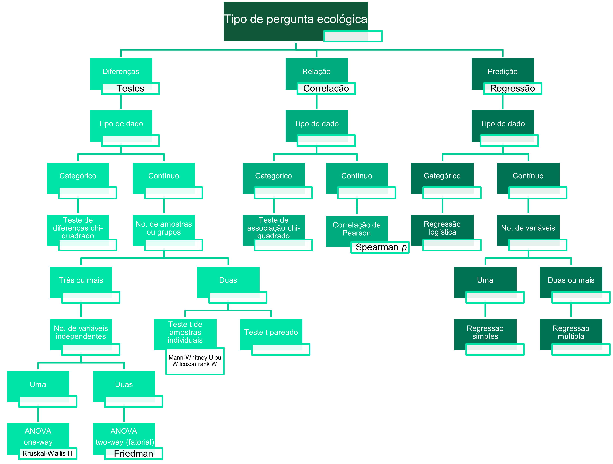
Figura 13.1: Resumo esquemático dos possíveis testes estatísticos paramétricos univariados de acordo com a pergunta científica. No detalhe, suas respectivas alternativas não-paramétricas.
13.1 Sobre os dados
Considere os dados merísticos (ou médições morfológicas) da espécie de peixe Cichla ocellaris (tucunaré amarelo) do reservatório da barragem de Gramame, PB (MEDEIROS; ROSA, 1994) (Figura 13.2). Existem 421 medições do comprimemto total (CT), comprimento padrão (CP) e peso total (PT), além do sexo (MACHO, FÊMEA ou imaturo), e outros descritores da estrutura populacional da espécie, um conjunto de dados formidável.
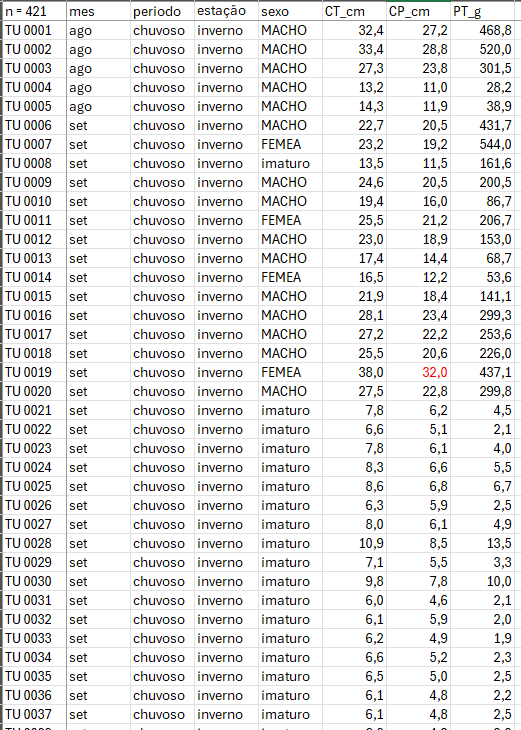
Figura 13.2: Dados merísticos da espécie de peixe Cichla ocellaris (tucunaré amarelo) do reservatório da barragem de Gramame, PB.
ATENÇÃO
Os links para baixar as planilhas necessárias para repetir esse tutorial podem ser encontrados na seção Arquivos disponíveis do Capítulo Bases de dados.
Ou, baixe aqui o arquivo tucuna.xlsx
13.2 Organização básica
dev.off() #apaga os graficos, se houver algum
rm(list=ls(all=TRUE)) #limpa a memória
cat("\014") #limpa o console Instalando os pacotes necessários para esse módulo
install.packages("openxlsx") #importa arquivos do excel
install.packages("fdth")
install.packages("ggpubr")
install.packages("multcomp")13.3 Importando a planilha
Vamos importar a planilha de dados univariados tucuna.xlsx. Note que o símbolo # em programação R significa que o texto que vem depois dele é um comentário e não será executado pelo programa. Isso é útil para explicar o código ou deixar anotações. Ajuste a segunda linha do código abaixo para refletir “C:/Seu/Diretório/De/Trabalho/Planilha.xlsx”.
library(openxlsx)
univ <- read.xlsx("D:/Elvio/OneDrive/Disciplinas/_EcoNumerica/5.Matrizes/tucuna.xlsx",
rowNames = T, colNames = T,
sheet = "tucuna")
head(univ, 10)
head(univ[, 1:5], 10)## CT_cm PT_g CP_cm Ctubo_cm PC_g p_PT Pest_g Cest_cm gr_est ir_est
## TU001 32.4 468.8 27.2 39.8 458.9 2.111775 3.9 7.7 I 0.8319113
## TU002 33.4 520.0 28.8 14.3 507.4 2.423077 5.9 10.0 I 1.1346154
## TU003 27.3 301.5 23.8 13.0 283.4 6.003317 15.5 10.2 III 5.1409619
## TU004 13.2 28.2 11.0 16.5 27.7 1.773050 0.3 4.3 I 1.0638298
## TU005 14.3 38.9 11.9 15.5 37.7 3.084833 0.8 4.5 III 2.0565553
## TU006 22.7 431.7 20.5 24.2 418.7 3.011350 9.9 6.4 III 2.2932592
## TU007 23.2 544.0 19.2 25.0 520.1 4.393382 6.8 7.5 II 1.2500000
## TU008 13.5 161.6 11.5 17.5 157.0 2.846535 4.1 6.8 II 2.5371287
## TU009 24.6 200.5 20.5 25.7 195.9 2.294264 2.5 7.6 II 1.2468828
## TU010 19.4 86.7 16.0 18.3 84.5 2.537486 0.7 5.1 I 0.8073818
## Pint_g Cint_cm gr_int ir_int Pgon_g Cgon_cm emg ig
## TU001 4.8 38.3 II 1.0238908 1.2 7 IMATURO 0.25597270
## TU002 5.3 13.3 II 1.0192308 1.4 6.5 MADURO 0.26923077
## TU003 2.4 12.0 II 0.7960199 0.2 7.7 EM MATURACAO 0.06633499
## TU004 0.1 16.0 II 0.3546099 0.1 5 IMATURO 0.35460993
## TU005 0.3 15.0 II 0.7712082 0.1 3.2 IMATURO 0.25706941
## TU006 2.7 23.7 II 0.6254343 0.4 7.8 EM MATURACAO 0.09265694
## TU007 3.3 24.5 II 0.6066176 13.8 7.9 MADURO 2.53676471
## TU008 0.4 17.0 I 0.2475248 0.1 2.5 IMATURO 0.06188119
## TU009 2.0 25.3 II 0.9975062 0.1 6.5 EM MATURACAO 0.04987531
## TU010 1.4 17.7 II 1.6147636 0.1 6 IMATURO 0.11534025
## mes periodo estação sexo
## TU001 ago chuvoso inverno MACHO
## TU002 ago chuvoso inverno MACHO
## TU003 ago chuvoso inverno MACHO
## TU004 ago chuvoso inverno MACHO
## TU005 ago chuvoso inverno MACHO
## TU006 set chuvoso inverno MACHO
## TU007 set chuvoso inverno FEMEA
## TU008 set chuvoso inverno imaturo
## TU009 set chuvoso inverno MACHO
## TU010 set chuvoso inverno MACHO
## CT_cm PT_g CP_cm Ctubo_cm PC_g
## TU001 32.4 468.8 27.2 39.8 458.9
## TU002 33.4 520.0 28.8 14.3 507.4
## TU003 27.3 301.5 23.8 13.0 283.4
## TU004 13.2 28.2 11.0 16.5 27.7
## TU005 14.3 38.9 11.9 15.5 37.7
## TU006 22.7 431.7 20.5 24.2 418.7
## TU007 23.2 544.0 19.2 25.0 520.1
## TU008 13.5 161.6 11.5 17.5 157.0
## TU009 24.6 200.5 20.5 25.7 195.9
## TU010 19.4 86.7 16.0 18.3 84.5Exibindo os dados importados (esses comando são “case-sensitive” ignore.case(object)).
Vamos escolher uma coluna como a variável de interesse para trabalhar com ela. No código abaixo, essa coluna é descrita pelo seu nome apresentado depois do $. Antes do $ especificamos e qual data frame está a variável. Depois disso, a convertemos para um vertor.
## [1] "CT_cm" "PT_g" "CP_cm" "Ctubo_cm" "PC_g" "p_PT"
## [7] "Pest_g" "Cest_cm" "gr_est" "ir_est" "Pint_g" "Cint_cm"
## [13] "gr_int" "ir_int" "Pgon_g" "Cgon_cm" "emg" "ig"
## [19] "mes" "periodo" "estação" "sexo"
## [1] 3.5 36.1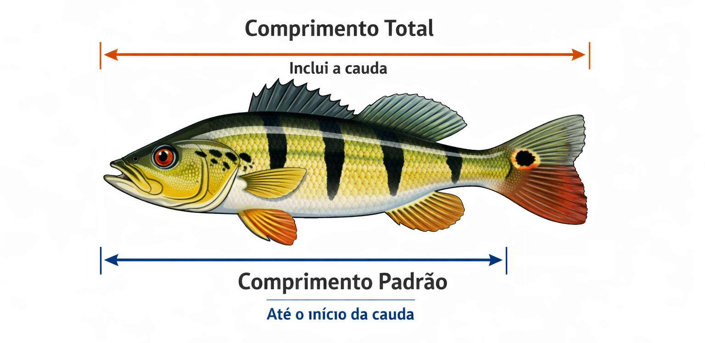
(#fig:rmd4032_tucu_com)Estimativa do comprimento padrão (CP) e comprimento total (CT) em cm.
E agora visualizando nossos dados.
#View(var)
print(var_v)
var_v
sort(var_v)
str(var_v)
mode(var_v)
class(var_v)
range(var_v)
length(var_v)Por inspeção, o comprimento total mínimo do peixe é 3.5 cm e o máximo é 36.1 cm. Esses valores definem o intervalo da amostra. Agora precisamos subdividir os dados em intervalos ou classes, cada um com o mesmo tamanho. Geralmente, é aconselhável arredondar o valor mínimo para baixo e o valor máximo para cima, para valores apropriados ao decidir as classes de intervalos. Nesse caso, parece sensato dividir a faixa de range(var_v) cm em sete intervalos a cada 5 cm de largura. Se contarmos o número de peixes que se encontram em cada um dos sete intervalos, temos a base para a tabulação da frequência.
A coluna de frequência será obtida contando o número de medições que existem dentro de cada classe. A coluna de frequência percentual será obtida representando cada contagem como uma porcentagem da contagem total. A frequência cumulativa e as frequências percentuais cumulativas serão obtidas somando progressivamente as frequências correspondentes.
Tendo em mãos o conjunto total de 434 valores merísticos da variável de interesse agora podemos tirar uma subamostra aleatória de uma parte dos 434 valores. Essa subamostra é tirada usando o comando size= no código subsequente, que estabelece o tamanho da subamostra a ser tirada do total de dados. Por exemplo, para uma subamostra de 150 comprimentos, então size = 150. Nesse tutorial usaremos todos os 434 comprimentos. Podemos ainda escolher uma das colunas da base de dados, nesse caso vamos usar a coluna
Subsitua em n <- o valor de size= desejado. Aqui n <- será todo o conjunto de dados length(var_v).
13.5 Averiguando normalidade
13.5.1 Tabela de frequências e gráfico stem-and-leaf
Para fazermos uma tabela de frequência dos valores merísticos carregamos o pacote fdth e pedimos a função range que retorna o valor máximo e mínimo no vetor.
Agora é necessário que você substitua os valores de range 3.5, 36.1 nos valores de início e fim da distribuição de frequência. Os comandos abaixo criam uma tabela de frequência chamada tf com valores máximos e mínimos definidos por range(var_sub) em intervalos definidos por h, e o comando print(tf) exibe a tabela de frequência.
#Regra de Sturges
k <- 1 + 3.3*log10(length(var_sub))
k <- ceiling(k) #ver as funções floor() e round()
h <- (max(var_sub) - min(var_sub))/k
h <- floor(h)
tf <- fdt(var_sub, start=3, end=40, h=4) #tabela de frequência manual
tfk <- fdt(var_sub, k=k) #atente para o uso de k
#?fdt
print(tf)
print(tfk)## Class limits f rf rf(%) cf cf(%)
## [3,7) 141 0.32 32.49 141 32.49
## [7,11) 97 0.22 22.35 238 54.84
## [11,15) 82 0.19 18.89 320 73.73
## [15,19) 29 0.07 6.68 349 80.41
## [19,23) 29 0.07 6.68 378 87.10
## [23,27) 21 0.05 4.84 399 91.94
## [27,31) 20 0.05 4.61 419 96.54
## [31,35) 10 0.02 2.30 429 98.85
## [35,39) 5 0.01 1.15 434 100.00
## Class limits f rf rf(%) cf cf(%)
## [3.465,6.7646) 137 0.32 31.57 137 31.57
## [6.7646,10.064) 79 0.18 18.20 216 49.77
## [10.064,13.364) 82 0.19 18.89 298 68.66
## [13.364,16.663) 33 0.08 7.60 331 76.27
## [16.663,19.963) 27 0.06 6.22 358 82.49
## [19.963,23.263) 22 0.05 5.07 380 87.56
## [23.263,26.562) 19 0.04 4.38 399 91.94
## [26.562,29.862) 15 0.03 3.46 414 95.39
## [29.862,33.161) 14 0.03 3.23 428 98.62
## [33.161,36.461) 6 0.01 1.38 434 100.0013.5.2 Gráfico stem-and-leaf
##
## The decimal point is at the |
##
## 2 | 5556677778999
## 4 | 00012233333555555555666666777788888889999999000011112222222333334555+15
## 6 | 00011111122222233444556667777888900122333456666778888899
## 8 | 00013344555557777777888011112223344445556667899
## 10 | 000001112444455667777788999000122333566667777889999999
## 12 | 000000112222223344455778990011223444559999
## 14 | 00122224455572555778
## 16 | 005500266799
## 18 | 0145568889126688889
## 20 | 02556770258889
## 22 | 0125890245689
## 24 | 0002570034
## 26 | 0002024
## 28 | 005780022368
## 30 | 00002002
## 32 | 000190
## 34 | 9000
## 36 | 01
##
## [1] 3.5 3.5 3.5 3.6 3.6 3.7 3.7 3.7 3.7 3.8 3.9 3.9 3.9 4.0 4.0
## [16] 4.0 4.1 4.2 4.2 4.3 4.3 4.3 4.3 4.3 4.5 4.5 4.5 4.5 4.5 4.5
## [31] 4.5 4.5 4.5 4.6 4.6 4.6 4.6 4.6 4.6 4.7 4.7 4.7 4.7 4.8 4.8
## [46] 4.8 4.8 4.8 4.8 4.8 4.9 4.9 4.9 4.9 4.9 4.9 4.9 5.0 5.0 5.0
## [61] 5.0 5.1 5.1 5.1 5.1 5.2 5.2 5.2 5.2 5.2 5.2 5.2 5.3 5.3 5.3
## [76] 5.3 5.3 5.4 5.5 5.5 5.5 5.5 5.6 5.6 5.6 5.6 5.6 5.6 5.6 5.7
## [91] 5.7 5.7 5.7 5.7 5.7 5.7 5.8 5.8 5.8 5.8 5.8 5.9 5.9 5.9 5.9
## [106] 5.9 5.9 5.9 6.0 6.0 6.0 6.1 6.1 6.1 6.1 6.1 6.1 6.2 6.2 6.2
## [121] 6.2 6.2 6.2 6.3 6.3 6.4 6.4 6.4 6.5 6.5 6.6 6.6 6.6 6.7 6.7
## [136] 6.7 6.7 6.8 6.8 6.8 6.9 7.0 7.0 7.1 7.2 7.2 7.3 7.3 7.3 7.4
## [151] 7.5 7.6 7.6 7.6 7.6 7.7 7.7 7.8 7.8 7.8 7.8 7.8 7.9 7.9 8.0
## [166] 8.0 8.0 8.1 8.3 8.3 8.4 8.4 8.5 8.5 8.5 8.5 8.5 8.7 8.7 8.7
## [181] 8.7 8.7 8.7 8.7 8.8 8.8 8.8 9.0 9.1 9.1 9.1 9.1 9.2 9.2 9.2
## [196] 9.3 9.3 9.4 9.4 9.4 9.4 9.5 9.5 9.5 9.6 9.6 9.6 9.7 9.8 9.9
## [211] 9.9 10.0 10.0 10.0 10.0 10.0 10.1 10.1 10.1 10.2 10.4 10.4 10.4 10.4 10.5
## [226] 10.5 10.6 10.6 10.7 10.7 10.7 10.7 10.7 10.8 10.8 10.9 10.9 10.9 11.0 11.0
## [241] 11.0 11.1 11.2 11.2 11.3 11.3 11.3 11.5 11.6 11.6 11.6 11.6 11.7 11.7 11.7
## [256] 11.7 11.8 11.8 11.9 11.9 11.9 11.9 11.9 11.9 11.9 12.0 12.0 12.0 12.0 12.0
## [271] 12.0 12.1 12.1 12.2 12.2 12.2 12.2 12.2 12.2 12.3 12.3 12.4 12.4 12.4 12.5
## [286] 12.5 12.7 12.7 12.8 12.9 12.9 13.0 13.0 13.1 13.1 13.2 13.2 13.3 13.4 13.4
## [301] 13.4 13.5 13.5 13.9 13.9 13.9 13.9 14.0 14.0 14.1 14.2 14.2 14.2 14.2 14.4
## [316] 14.4 14.5 14.5 14.5 14.7 15.2 15.5 15.5 15.5 15.7 15.7 15.8 16.0 16.0 16.5
## [331] 16.5 17.0 17.0 17.2 17.6 17.6 17.7 17.9 17.9 18.0 18.1 18.4 18.5 18.5 18.6
## [346] 18.8 18.8 18.8 18.9 19.1 19.2 19.6 19.6 19.8 19.8 19.8 19.8 19.9 20.0 20.2
## [361] 20.5 20.5 20.6 20.7 20.7 21.0 21.2 21.5 21.8 21.8 21.8 21.9 22.0 22.1 22.2
## [376] 22.5 22.8 22.9 23.0 23.2 23.4 23.5 23.6 23.8 23.9 24.0 24.0 24.0 24.2 24.5
## [391] 24.7 25.0 25.0 25.3 25.4 26.0 26.0 26.0 26.2 27.0 27.2 27.4 28.0 28.0 28.5
## [406] 28.7 28.8 29.0 29.0 29.2 29.2 29.3 29.6 29.8 30.0 30.0 30.0 30.0 30.2 31.0
## [421] 31.0 31.2 32.0 32.0 32.0 32.1 32.9 33.0 34.9 35.0 35.0 35.0 36.0 36.113.6 Histograma e boxplot
par(mfrow = c(2,1)) #gráficos lado a lado
plot(tf) #distribuição de frequências
boxplot(var_sub, horizontal = TRUE,
xlab="Class limits") #boxplot
par(mfrow = c(1,1)) #gráficos de volta ao normal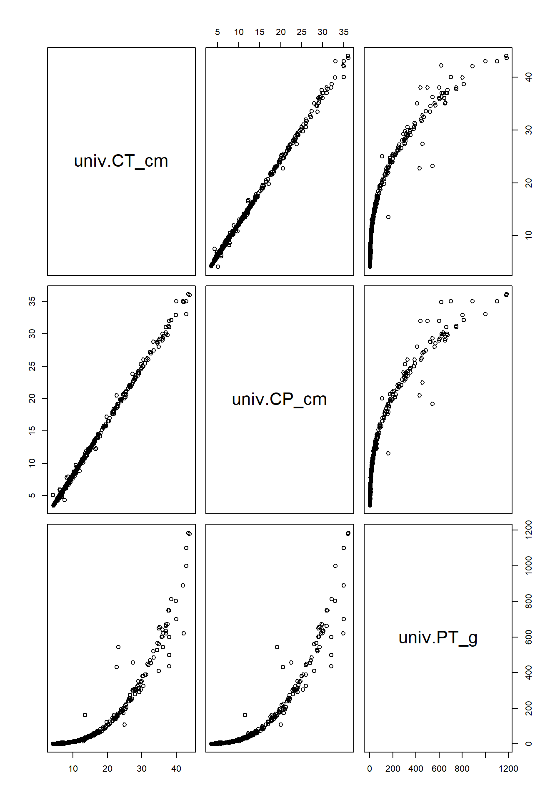
Calculando os outliers.
# Quartis
Q1 <- quantile(var_sub, 0.25)
Q3 <- quantile(var_sub, 0.75)
# Intervalo interquartil
IQR <- IQR(var_sub)
# Limites para outliers
lim_inf <- Q1 - 1.5 * IQR
lim_sup <- Q3 + 1.5 * IQR
# Valores considerados outliers
outliers <- var_sub[
var_sub < lim_inf |
var_sub > lim_sup
]
# Resultados
Q1
Q3
IQR
lim_inf
lim_sup
outliers
sort(outliers)
boxplot.stats(var_sub)
#var_sub_sem_outliers <- var_sub[!var_sub %in% outliers]## 25%
## 6
## 75%
## 15.7
## [1] 9.7
## 25%
## -8.55
## 75%
## 30.25
## [1] 34.9 31.0 35.0 32.0 32.1 35.0 32.0 35.0 31.2 32.9 36.1 32.0 33.0 31.0 36.0
## [1] 31.0 31.0 31.2 32.0 32.0 32.0 32.1 32.9 33.0 34.9 35.0 35.0 35.0 36.0 36.1
## $stats
## [1] 3.5 6.0 10.1 15.7 30.2
##
## $n
## [1] 434
##
## $conf
## [1] 9.364328 10.835672
##
## $out
## [1] 34.9 31.0 35.0 32.0 32.1 35.0 32.0 35.0 31.2 32.9 36.1 32.0 33.0 31.0 36.0
hist(var_sub, probability = TRUE) #adicionamos a função densidade
curve(dnorm(x, mean = mean(var_sub),
sd = sd(var_sub)), #cria valores de x dentro do intervalo do gráfico
col = "red",
add = TRUE) #adiciona ao gráfico atual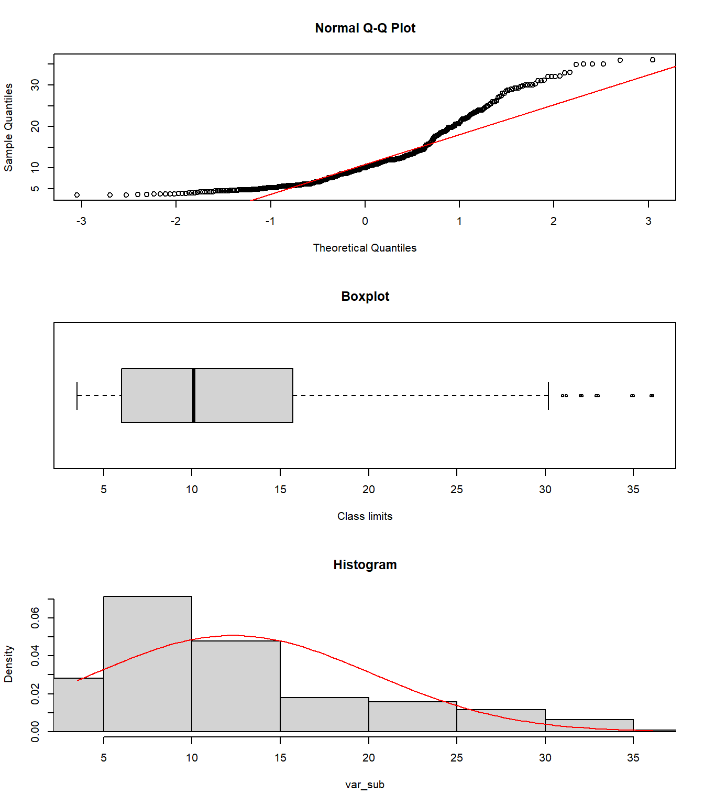
13.7 Sumário estatístico geral
summary(var_sub)
#?summary
sd(var_sub) #desvio padrão
var(var_sub) #variância
names(sort(table(var_sub), decreasing = TRUE))[1] #moda## Min. 1st Qu. Median Mean 3rd Qu. Max.
## 3.50 6.00 10.10 12.32 15.70 36.10
## [1] 7.845708
## [1] 61.55514
## [1] "4.5"13.8 Testando normalidade
13.8.1 Q-Q plots
limites <- range(var_sub)
par(mfrow=c(3,1))
qqnorm(var_sub,
main = "Normal Q-Q Plot")
qqline(var_sub,
col = "red",
lwd = 1)
boxplot(var_sub, horizontal = TRUE, #atentar para o parâmetro `horizontal`
main="Boxplot",
ylim=limites,
xlab="Class limits") #boxplot
hist(var_sub, probability = TRUE,
xlim = limites,
main = "Histogram") #adicionamos a função densidade
curve(dnorm(x, mean = mean(var_sub),
sd = sd(var_sub)), #cria valores de x dentro do intervalo do gráfico
col = "red",
add = TRUE) #adiciona ao gráfico atual
par(mfrow=c(1,1))
library(ggpubr)
ggqqplot(var_sub)
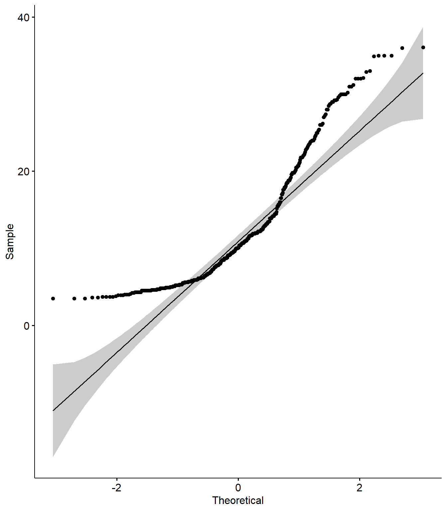
13.8.2 Testes de Shapiro-Wilk e Kolmogorov-Smirnov
shap <- shapiro.test(var_sub)
shap
p <- format(shap$p.value, scientific = FALSE)
p
#?str()
#?attributes()
ks.test(var_sub, "pnorm")## Warning in ks.test.default(var_sub, "pnorm"): não devem existir empates no
## teste de Kolmogorov-Smirnov de apenas uma amostra## Warning in ks.test.default(var_sub, "pnorm", mean(var_sub), sd(var_sub)): não
## devem existir empates no teste de Kolmogorov-Smirnov de apenas uma amostra##
## Shapiro-Wilk normality test
##
## data: var_sub
## W = 0.86837, p-value < 2.2e-16
##
## [1] "0.00000000000000000107347"
##
## Asymptotic one-sample Kolmogorov-Smirnov test
##
## data: var_sub
## D = 0.99977, p-value < 2.2e-16
## alternative hypothesis: two-sided
##
##
## Asymptotic one-sample Kolmogorov-Smirnov test
##
## data: var_sub
## D = 0.15016, p-value = 6.326e-09
## alternative hypothesis: two-sided
#install.packages("nortest")
library(nortest)
lillie.test(var_sub)##
## Lilliefors (Kolmogorov-Smirnov) normality test
##
## data: var_sub
## D = 0.15016, p-value < 2.2e-1613.9 Transformando os dados
Podemos aplicar algumas transformações nesses dados para tentar aproximá-los mais de uma distribuição normal.
NOTA
Veja a seção Transformação de variáveis e outros tipos de conjuntos de dados do Capítulo Introdução ao R/RStudio
Se o lambda ótimo da função boxcox() for:
λ≈-1, usar transformação inversa (1/y);
λ≈0, usar log;
λ≈0.5, usar raiz quadrada;
λ≈1, não transformar.
REINÍCIO
Volte até a seção de REINÍCIO desse capítulo e refaça as análises com os dados transformados.
Se achar necessário, revise o conteúdo do capítulo anterior Estatísticas descritivas e normalidade
13.10 Comparando médias
13.10.1 Testando homogeneidade de variâncias
Um pressuposto importante que deve ser testado quando se compara médias entre conjuntos de dados é a homogeneidade de variâncias. Os grupos devem ser provenientes de populações que apresentem variâncias semelhantes.
Para verificar esse pressuposto, utilizamos o teste de Levene para igualdade de variâncias (COAKES; STEED, 2001; MCDONALD, 2014).
Se o teste de Levene for significativo (p < 0,05), rejeita-se a hipótese nula de igualdade das variâncias e aceita-se a hipótese alternativa de que as variâncias são diferentes entre os grupos. Nesse caso, devem ser utilizados os resultados que não assumem igualdade de variâncias. Se o teste de Levene não for significativo (p > 0,05), não há evidências para rejeitar a hipótese nula, indicando que as variâncias dos grupos podem ser consideradas homogêneas. Nesse caso, podem ser utilizados os resultados que assumem igualdade de variâncias.
Essa distinção torna-se mais clara ao interpretar a saída do teste t para amostras independentes, que normalmente apresenta resultados tanto para a situação em que as variâncias são consideradas iguais quanto para aquela em que são consideradas diferentes.
# Levene
library(car)
univ$sexo <- as.factor(univ$sexo) #evita o Warning de "group coerced to factor"
fator <- factor(univ$sexo, levels = c("MACHO", "FEMEA", "imaturo"))
lev <- leveneTest(var_sub ~ fator, data = univ)
fator
lev
# Teste de Levene entre dois de tres (ou mais) grupos
machos_CP_cm <- na.omit(univ$CP_cm[univ$sexo == "MACHO"])
femeas_CP_cm <- na.omit(univ$CP_cm[univ$sexo == "FEMEA"])
imat_CP_cm <- na.omit(univ$CP_cm[univ$sexo == "imaturo"])
leveneTest(CP_cm ~ sexo, data = univ[univ$sexo %in% c("MACHO", "FEMEA"), ])
#Interpretação: Um valor de p maior que o nível de significância de 0.05 significa que, a hipótese nula é mantida e NÃO HÁ diferença significativa entre as variâncias.
univ$sexo <- factor(univ$sexo, levels = c("MACHO", "FEMEA", "imaturo"))
boxplot(CP_cm ~ fator, data = univ) ## [1] MACHO MACHO MACHO MACHO MACHO MACHO FEMEA imaturo MACHO
## [10] MACHO FEMEA MACHO MACHO FEMEA MACHO MACHO MACHO MACHO
## [19] FEMEA MACHO imaturo imaturo imaturo imaturo imaturo imaturo imaturo
## [28] imaturo imaturo imaturo imaturo imaturo imaturo imaturo imaturo imaturo
## [37] imaturo imaturo imaturo imaturo imaturo imaturo imaturo imaturo imaturo
## [46] imaturo imaturo imaturo imaturo imaturo imaturo imaturo imaturo imaturo
## [55] imaturo imaturo imaturo imaturo imaturo MACHO FEMEA FEMEA MACHO
## [64] MACHO MACHO FEMEA MACHO MACHO MACHO FEMEA MACHO MACHO
## [73] FEMEA MACHO MACHO imaturo imaturo imaturo imaturo imaturo imaturo
## [82] imaturo imaturo imaturo imaturo imaturo imaturo imaturo imaturo imaturo
## [91] imaturo imaturo imaturo imaturo imaturo imaturo imaturo imaturo imaturo
## [100] imaturo imaturo imaturo imaturo imaturo imaturo MACHO MACHO imaturo
## [109] MACHO MACHO MACHO MACHO FEMEA imaturo imaturo FEMEA FEMEA
## [118] MACHO FEMEA imaturo imaturo imaturo imaturo imaturo imaturo imaturo
## [127] imaturo imaturo imaturo imaturo imaturo imaturo imaturo imaturo imaturo
## [136] FEMEA FEMEA imaturo imaturo MACHO FEMEA MACHO MACHO MACHO
## [145] imaturo imaturo imaturo FEMEA imaturo imaturo imaturo imaturo imaturo
## [154] imaturo imaturo imaturo imaturo imaturo imaturo imaturo imaturo imaturo
## [163] imaturo imaturo imaturo imaturo imaturo imaturo imaturo imaturo imaturo
## [172] imaturo imaturo imaturo imaturo imaturo imaturo imaturo imaturo imaturo
## [181] imaturo imaturo MACHO MACHO FEMEA imaturo imaturo imaturo imaturo
## [190] FEMEA FEMEA FEMEA MACHO FEMEA imaturo imaturo FEMEA imaturo
## [199] imaturo FEMEA MACHO imaturo FEMEA imaturo FEMEA imaturo FEMEA
## [208] imaturo imaturo FEMEA MACHO MACHO FEMEA FEMEA MACHO imaturo
## [217] FEMEA MACHO MACHO FEMEA MACHO FEMEA imaturo FEMEA imaturo
## [226] FEMEA FEMEA imaturo imaturo imaturo imaturo imaturo imaturo imaturo
## [235] imaturo imaturo imaturo imaturo imaturo imaturo imaturo imaturo imaturo
## [244] imaturo imaturo imaturo imaturo FEMEA imaturo imaturo MACHO MACHO
## [253] imaturo imaturo imaturo imaturo imaturo imaturo FEMEA imaturo imaturo
## [262] imaturo imaturo imaturo imaturo imaturo FEMEA MACHO imaturo FEMEA
## [271] MACHO FEMEA FEMEA imaturo imaturo imaturo imaturo imaturo imaturo
## [280] imaturo imaturo imaturo imaturo imaturo FEMEA imaturo FEMEA imaturo
## [289] FEMEA MACHO MACHO imaturo imaturo imaturo FEMEA FEMEA MACHO
## [298] FEMEA imaturo MACHO FEMEA FEMEA MACHO MACHO MACHO MACHO
## [307] FEMEA FEMEA MACHO imaturo FEMEA imaturo FEMEA MACHO FEMEA
## [316] FEMEA imaturo imaturo imaturo imaturo imaturo imaturo imaturo imaturo
## [325] imaturo MACHO MACHO imaturo MACHO MACHO FEMEA imaturo FEMEA
## [334] MACHO MACHO FEMEA MACHO FEMEA MACHO MACHO MACHO imaturo
## [343] FEMEA FEMEA MACHO MACHO FEMEA FEMEA MACHO FEMEA imaturo
## [352] MACHO MACHO FEMEA MACHO FEMEA MACHO MACHO MACHO MACHO
## [361] imaturo MACHO MACHO MACHO FEMEA FEMEA FEMEA MACHO FEMEA
## [370] imaturo imaturo MACHO MACHO FEMEA MACHO FEMEA MACHO MACHO
## [379] imaturo imaturo MACHO MACHO MACHO FEMEA FEMEA MACHO MACHO
## [388] MACHO FEMEA FEMEA FEMEA FEMEA FEMEA MACHO MACHO MACHO
## [397] MACHO FEMEA MACHO FEMEA FEMEA MACHO MACHO MACHO FEMEA
## [406] MACHO FEMEA MACHO MACHO FEMEA imaturo MACHO FEMEA MACHO
## [415] imaturo MACHO FEMEA MACHO imaturo FEMEA FEMEA MACHO MACHO
## [424] MACHO MACHO MACHO FEMEA MACHO MACHO imaturo MACHO MACHO
## [433] MACHO MACHO
## Levels: MACHO FEMEA imaturo
## Levene's Test for Homogeneity of Variance (center = median)
## Df F value Pr(>F)
## group 2 0.2011 0.8179
## 431
## Levene's Test for Homogeneity of Variance (center = median)
## Df F value Pr(>F)
## group 1 10.638 0.001292 **
## 211
## ---
## Signif. codes: 0 '***' 0.001 '**' 0.01 '*' 0.05 '.' 0.1 ' ' 1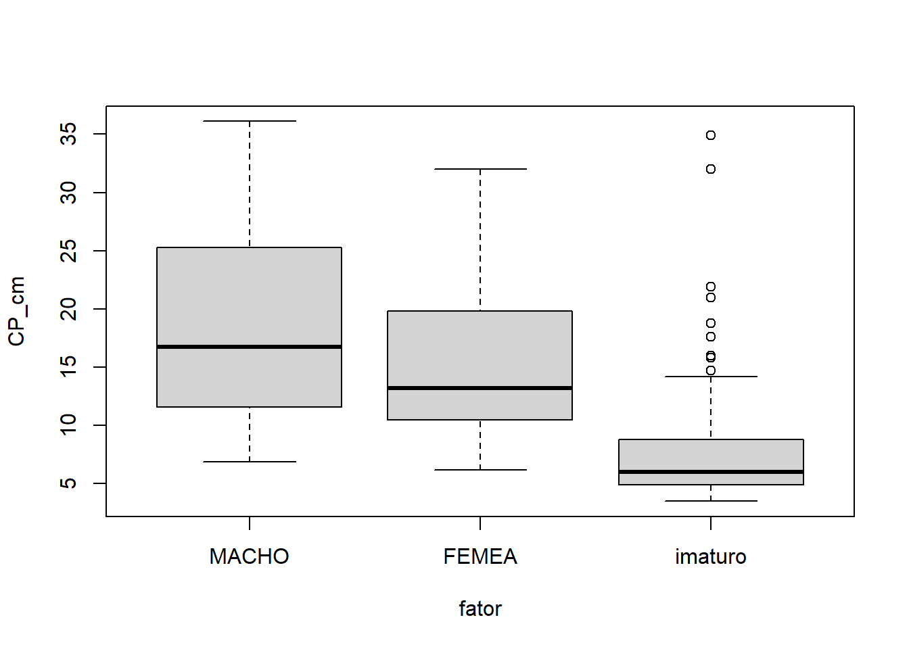
13.11 Testes t (t-tests)
Os testes t são utilizados para determinar se um valor, ou conjuntos de valores, são da mesma população amostral, e podem ser classificados em três tipos principais (LEVIN; COSTA, 1987):
Teste t para uma amostra (one-sample t-test)
Teste t para grupos independentes (independent groups t-test) - Bicaudal (Two-sided) - Unicaudal (Single-sided)
Teste t para amostras pareadas, ou para medidas repetidas (repeated measures t-test)
13.11.0.1 Pressupostos
Cada teste estatístico possui determinados pressupostos (assumptions) que precisam ser atendidos antes da análise. Esses pressupostos devem ser avaliados, pois a interpretação correta dos resultados depende de eles não serem violados. Alguns pressupostos são comuns a todos os tipos de teste t, enquanto outros são específicos de determinados modelos.
Os pressupostos gerais dos testes t são:
Escala de medida: Os dados devem estar em nível de mensuração intervalar ou razão.
Amostragem aleatória: Os escores devem ser obtidos por amostragem aleatória da população de interesse.
Normalidade: Os escores devem apresentar distribuição normal na população.
Os pressupostos 1 e 2 dependem do delineamento da pesquisa e não da análise estatística em si. O pressuposto 3 pode ser avaliado de diferentes maneiras, como testes de normalidade e inspeção gráfica.
13.11.0.2 Exemplos
De acordo com CÂMARA; CHELLAPPA; CHELLAPPA (2002), o tamanho da primeira maturação sexual de Cichla ocellaris é 26,2cm para os machos e 21,4 para fêmeas. Já GOMIERO; BRAGA (2004), encontrou o L50 e L100 da primeira maturação sexual para fêmeas da espécie sendo 20 e 29 cm, respectivamente.
A partir daqui, podemos seguir com três tipos de perguntas para o nosso conjunto de dados:
O comprimento médio dos indivíduos amostrados difere do tamanho de primeira maturação sexual descrito na literatura? (Teste t para uma amostra)
O comprimento médio difere entre machos e fêmeas de Cichla ocellaris? (Teste t para grupos independentes)
Existe diferença no comprimento dos indivíduos antes e após a maturação sexual? (Teste t para medidas repetidas)
13.11.1 Teste t para uma amostra (one-sample t-test)
var_sub <- var_v
# Machos
machos <- subset(var_sub, univ$sexo == "MACHO")
machos
mean(machos)
t_machos <- t.test(
machos,
mu = 26.2
)
t_machos
# Fêmeas
femeas <- subset(var_sub, univ$sexo == "FEMEA")
femeas
mean(femeas)
t_femeas <- t.test(
femeas,
mu = 21.4
)
t_femeas## [1] 27.2 28.8 23.8 11.0 11.9 20.5 20.5 16.0 18.9 14.4 18.4 23.4 22.2 20.6 22.8
## [16] 31.2 23.2 21.8 22.9 29.8 18.0 19.6 19.8 18.8 21.5 23.9 27.0 25.0 22.0 32.1
## [31] 29.6 22.1 15.7 20.2 23.6 14.4 17.9 20.7 19.1 13.0 13.0 10.6 10.9 10.4 12.9
## [46] 12.0 10.8 10.7 8.1 12.7 28.0 11.9 12.0 15.5 10.9 14.1 14.2 9.5 12.4 15.7
## [61] 8.8 8.7 10.0 12.3 13.9 9.6 9.8 10.4 11.6 12.0 14.2 7.3 8.7 9.1 8.5
## [76] 9.3 9.1 8.5 6.9 9.0 9.4 10.9 11.0 10.5 12.0 11.1 11.7 16.5 17.0 15.5
## [91] 11.0 12.0 13.2 26.2 28.5 36.1 29.2 29.3 29.2 32.9 14.5 16.5 13.9 19.6 27.4
## [106] 22.5 28.7 20.7 31.0 35.0 25.3 28.0 29.0 29.0 30.0 30.0 30.0 31.0 35.0 35.0
## [121] 36.0 33.0
## [1] 18.70164
##
## One Sample t-test
##
## data: machos
## t = -10.156, df = 121, p-value < 2.2e-16
## alternative hypothesis: true mean is not equal to 26.2
## 95 percent confidence interval:
## 17.23992 20.16335
## sample estimates:
## mean of x
## 18.70164
##
## [1] 19.2 21.2 12.2 32.0 19.8 30.2 24.0 19.8 19.9 24.2 23.0 18.1 17.7 23.5 26.0
## [16] 19.8 13.3 14.0 18.5 15.5 13.2 12.8 11.7 8.4 17.9 10.0 13.4 12.2 10.0 10.8
## [31] 10.4 11.7 10.6 8.8 9.3 9.6 10.1 10.0 11.9 11.6 13.5 10.7 8.5 11.3 9.4
## [46] 12.3 14.5 18.8 12.1 12.2 14.5 15.2 6.2 7.2 11.8 7.0 20.0 7.8 10.1 11.2
## [61] 6.7 7.7 8.5 8.0 8.0 9.2 8.7 10.5 11.7 11.6 12.7 13.1 17.0 12.9 21.8
## [76] 17.6 18.5 18.6 21.8 24.5 14.0 17.2 24.0 24.7 25.4 26.0 25.0 24.0 14.2 26.0
## [91] 30.0
## [1] 15.27692
##
## One Sample t-test
##
## data: femeas
## t = -9.3405, df = 90, p-value = 6.728e-15
## alternative hypothesis: true mean is not equal to 21.4
## 95 percent confidence interval:
## 13.97458 16.57927
## sample estimates:
## mean of x
## 15.27692O QUE REPORTAR: Os comprimentos médios observados para machos e fêmeas de Cichla ocellaris diferiram significativamente dos tamanhos de primeira maturação sexual descritos por CÂMARA; CHELLAPPA; CHELLAPPA (2002). Os machos apresentaram comprimento médio de 18,70 cm, significativamente inferior ao valor de referência de 26,2 cm (teste t para uma amostra: t = -10,16; gl = 121; p < 0,001). As fêmeas apresentaram comprimento médio de 15,28 cm, também inferior ao valor de referência de 21,4 cm (teste t para uma amostra: t = -9,34; gl = 90; p < 0,001).
13.11.2 Teste t para grupos independentes (independent groups t-test)
t.test(machos_CP_cm, femeas_CP_cm,
alternative = c("two.sided"), #"two.sided", "less", "greater"
mu = 0, paired = FALSE,
var.equal = FALSE, #não assume homog. de variâncias = Welch’s t-test
conf.level = 0.95)##
## Welch Two Sample t-test
##
## data: machos_CP_cm and femeas_CP_cm
## t = 3.4686, df = 210.82, p-value = 0.0006342
## alternative hypothesis: true difference in means is not equal to 0
## 95 percent confidence interval:
## 1.478371 5.371062
## sample estimates:
## mean of x mean of y
## 18.70164 15.27692O QUE REPORTAR: Foi observada diferença significativa no comprimento padrão entre machos e fêmeas de Cichla ocellaris (teste t de Welch: t = 3,47; gl = 210,82; p < 0,001). Os machos apresentaram maior comprimento médio (18,70 cm) em comparação às fêmeas (15,28 cm).
Quanto a sua direção, o teste t para grupos independentes, pode ser bicaudal (o que usamos anteriormente) e unicaudal. No primeiro caso, a área de rejeição é dividida entre as duas extremidades (caudas) da distribuição. É usado quando você quer saber se existe uma diferença, mas não tem certeza se o resultado será maior ou menor. No teste t unicaudal, toda a área de rejeição fica em apenas uma das extremidades. É usado quando a sua hipótese prevê uma direção específica (ex: testar se um novo remédio é melhor, mas não se ele é pior).
Quanto a sua direção, o teste t para grupos independentes, pode ser bicaudal (o que usamos anteriormente) e unicaudal. O teste t bicaudal é utilizado quando se deseja verificar se existe qualquer diferença entre duas médias, sem especificar previamente a direção dessa diferença.
H₀: as médias são iguais H₁: as médias são diferentes
No exemplo com tucunaré, perguntamos: “O comprimento padrão médio difere entre machos e fêmeas?”. Aqui não se assume previamente qual sexo possui maior comprimento.
Já o teste t unicaudal é utilizado quando existe uma hipótese direcional, ou seja, quando se espera previamente que uma média seja maior ou menor que a outra.
No exemplo do tucunaré, perguntamos: “Os machos possuem comprimento padrão médio maior que as fêmeas?”. No R, isso é implementado com o argumentoalternative = c("greater").
t.test(machos_CP_cm, femeas_CP_cm,
alternative = c("greater"), #"two.sided", "less", "greater"
mu = 0, paired = FALSE,
var.equal = FALSE, #não assume homog. de variâncias = Welch’s t-test
conf.level = 0.95)##
## Welch Two Sample t-test
##
## data: machos_CP_cm and femeas_CP_cm
## t = 3.4686, df = 210.82, p-value = 0.0003171
## alternative hypothesis: true difference in means is greater than 0
## 95 percent confidence interval:
## 1.7935 Inf
## sample estimates:
## mean of x mean of y
## 18.70164 15.27692O QUE REPORTAR: O comprimento padrão médio foi significativamente maior nos machos (18,70 cm) do que nas fêmeas (15,28 cm) (teste t de Welch unilateral: t = 3,47; gl = 210,82; p = 0,0003).
A pergunta oposta, “Os machos possuem comprimento padrão médio menor que as fêmeas?”, é implementada com o argumento alternative = c("less").
13.11.3 Teste t pareado ou para medidas repetidas (repeated measures t-test)
A principal característica do teste t pareado é que cada observação do primeiro grupo possui uma observação correspondente no segundo grupo. Ou seja, os dados vêm dos mesmos indivíduos ou de unidades experimentais que formam pares naturais (desenho amostral do tipo antes e depois).
O teste não compara diretamente as médias dos grupos. Na verdade, ele calcula a diferença dentro de cada par e testa se a média dessas diferenças é igual a zero.
# Filtrar apenas fêmeas
femeas <- subset(univ, sexo == "FEMEA")
# Manter apenas IMATURO e MADURO
femeas2 <- subset(
femeas,
emg %in% c("IMATURO", "EM MATURACAO")
)
t.test(
CP_cm ~ emg,
data = femeas2,
alternative = "two.sided",
var.equal = FALSE, #Welch t-test
conf.level = 0.95
)##
## Welch Two Sample t-test
##
## data: CP_cm by emg
## t = 2.4517, df = 12.999, p-value = 0.02912
## alternative hypothesis: true difference in means between group EM MATURACAO and group IMATURO is not equal to 0
## 95 percent confidence interval:
## 0.4039742 6.3950597
## sample estimates:
## mean in group EM MATURACAO mean in group IMATURO
## 16.87778 13.47826O QUE REPORTAR: O comprimento padrão diferiu significativamente entre fêmeas imaturas e em maturação de Cichla ocellaris (teste t de Welch: t = 2,45; gl = 13,00; p = 0,029). Fêmeas em maturação apresentaram maior comprimento médio (16,88 cm) em comparação às fêmeas imaturas (13,48 cm).
13.12 Teste entre três médias (ANOVA)
13.12.1 ANOVA One-Way, teste entre grupos com comparações pos-hoc
No caso anterior foi testada a hipótese nula de que duas médias populacionais eram iguais. Quando se deseja comparar as médias de mais de dois grupos ou níveis de uma variável independente, utiliza-se uma análise de variância de uma via (one-way analysis of variance — ANOVA).
No centro da ANOVA está o conceito de variância. O procedimento básico consiste em obter duas estimativas diferentes da variância populacional a partir dos dados e, em seguida, calcular uma estatística baseada na razão entre essas duas estimativas.
Uma dessas estimativas (variância entre grupos) mede o efeito da variável independente combinado com a variância do erro. A outra estimativa (variância dentro dos grupos) mede apenas a variância do erro.
A razão F é a razão entre a variância entre grupos e a variância dentro dos grupos.
\[ F = \frac{\text{Variância entre grupos}}{\text{Variância dentro dos grupos}} \]
Um valor significativo de F indica que provavelmente nem todas as médias populacionais são iguais.
Como a hipótese nula é rejeitada quando qualquer par de médias é desigual, é necessário identificar onde estão as diferenças significativas. Isso requer uma análise pos-hoc.
A análise pos-hoc ocorre quando se procura nos dados qualquer significância estatística. Ou seja, deseja-se realizar um conjunto completo de comparações.
Esse tipo de teste envolve riscos de erros do tipo I[^erroi]. Diferentemente das comparações planejadas, os testes pós-hoc são elaborados para proteger contra erros do tipo I, considerando que todas as comparações possíveis serão realizadas. Esses testes são mais rigorosos do que as comparações planejadas e, portanto, é mais difícil obter significância estatística.
Há vários testes pos-hoc disponíveis. Quanto mais opções de comparação um teste oferece, mais rigoroso ele é na determinação da significância.
O teste de Scheffé, por exemplo, permite realizar todas as comparações possíveis, mas é bastante rigoroso na rejeição da hipótese nula. Em contraste, o teste HSD de Tukey (Honestly Significant Difference) é mais flexível, mas há restrições quanto aos tipos de comparações que podem ser realizados. No nosso caso, usaremos o teste pós-hoc HSD de Tukey (COAKES; STEED, 2001).
13.12.1.1 Pressupostos
Antes de realizar a ANOVA, é necessário garantir que os pressupostos necessários sejam atendidos. Os pressupostos da ANOVA são os mesmos do teste t. Os dois pressupostos principais são:
Normalidade populacional: As populações das quais as amostras foram retiradas devem apresentar distribuição normal. Isso deve ser verificado para cada grupo usando estatísticas de normalidade, como assimetria (skewness) e teste de Shapiro-Wilk. Homogeneidade de variâncias: Os escores de cada grupo devem apresentar variâncias homogêneas. Assim como no teste t, o teste de Levene determinará se as variâncias são iguais ou diferentes.
13.12.1.2 Exemplos
Como no exemplo anterior, podemos testar três tipos de perguntas:
Testar os pressupostos subjacentes da ANOVA.
Determinar se existem diferenças significativas no comprimento dos peixes entre as três classificações para a variavel
sexo.Identificar a origem dessas diferenças (caso elas existam) utilizando análise pós-hoc.
13.12.2 Gráficos exploratórios
levels(univ$sexo)
univ$sexo <- ordered(univ$sexo,
levels = c("MACHO", "FEMEA", "imaturo"))
library(dplyr)
summarise(
group_by(univ, sexo),
count = n(),
mean = mean(CP_cm, na.rm = TRUE),
sd = sd(CP_cm, na.rm = TRUE)
)
# Conjunto de gráficos
library("ggpubr")
ggboxplot(univ, x = "sexo", y = "CP_cm",
color = "sexo", palette = c("#00AFBB", "#E7B800", "#FC4E07"),
order = c("MACHO", "FEMEA", "imaturo"),
ylab = "CP_cm", xlab = "Sexo")
ggline(univ, x = "sexo", y = "CP_cm",
add = c("mean_se", "jitter"),
order = c("MACHO", "FEMEA", "imaturo"),
ylab = "Weight", xlab = "Treatment")
boxplot(CP_cm ~ sexo, data = univ,
xlab = "Sexo", ylab = "CP_cm",
frame = FALSE, col = c("#00AFBB", "#E7B800", "#FC4E07"))
library(gplots)
plotmeans(CP_cm ~ sexo, data = univ,
xlab = "Sexo", ylab = "CP_cm",
main="Média com 95% IC") #frame = FALSE## [1] "MACHO" "FEMEA" "imaturo"
## # A tibble: 3 × 4
## sexo count mean sd
## <ord> <int> <dbl> <dbl>
## 1 MACHO 122 18.7 8.16
## 2 FEMEA 91 15.3 6.25
## 3 imaturo 221 7.57 4.44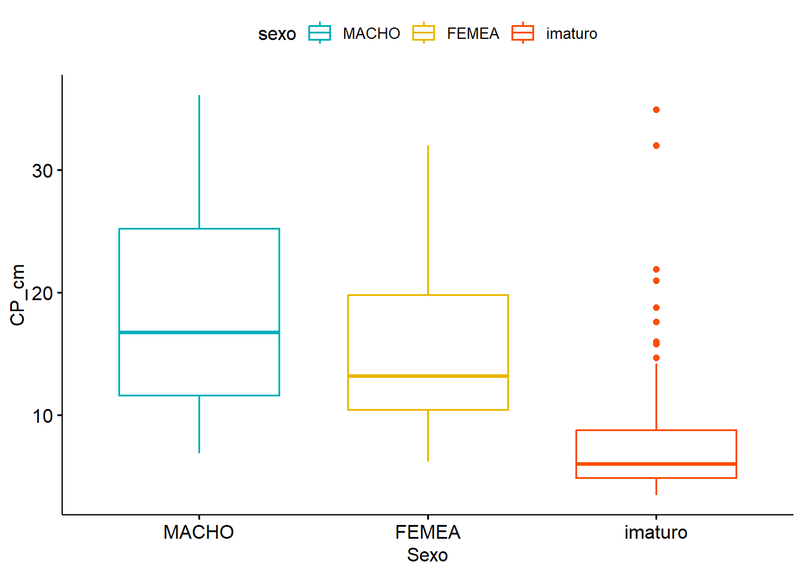

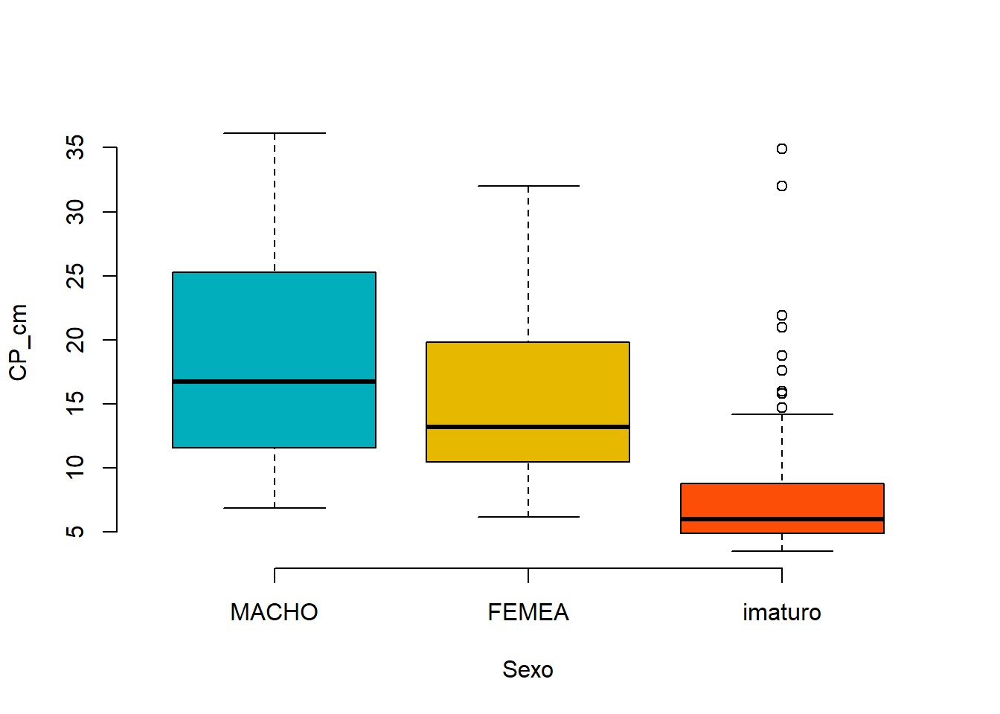
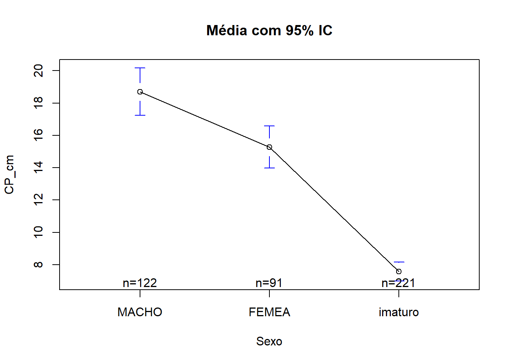
13.12.3 Análise de variância (ANOVA)
anova <- aov(CP_cm ~ sexo, data = univ)
summary(anova)
#Interpretação: Um valor de p MENOR que o nível de significância de 0.05 significa que,
#EXISTE diferença significativa entre as três grupos de médias.## Df Sum Sq Mean Sq F value Pr(>F)
## sexo 2 10743 5371 145.5 <2e-16 ***
## Residuals 431 15911 37
## ---
## Signif. codes: 0 '***' 0.001 '**' 0.01 '*' 0.05 '.' 0.1 ' ' 1O QUE REPORTAR: Foi observada diferença significativa no comprimento padrão entre os grupos de sexo avaliados (ANOVA one-way: F₂,₄₃₁ = 145,5; p < 0,001).
Mas a ANOVA não informa quais dos grupos diferem entre si. Para isso você precisa fazer um teste pos-hoc.
13.12.4 Comparações múltiplas pos-hoc
TukeyHSD(anova)
library(multcomp)
summary(glht(anova, linfct = mcp(sexo = "Tukey")))
# T-test entre pares
pairwise.t.test(univ$CP_cm, univ$sexo,
p.adjust.method = "BH")
#pairwise.t.test## Tukey multiple comparisons of means
## 95% family-wise confidence level
##
## Fit: aov(formula = CP_cm ~ sexo, data = univ)
##
## $sexo
## diff lwr upr p adj
## FEMEA-MACHO -3.424716 -5.403982 -1.445451 0.0001655
## imaturo-MACHO -11.127884 -12.739590 -9.516177 0.0000000
## imaturo-FEMEA -7.703167 -9.482984 -5.923350 0.0000000
##
##
## Simultaneous Tests for General Linear Hypotheses
##
## Multiple Comparisons of Means: Tukey Contrasts
##
##
## Fit: aov(formula = CP_cm ~ sexo, data = univ)
##
## Linear Hypotheses:
## Estimate Std. Error t value Pr(>|t|)
## FEMEA - MACHO == 0 -3.4247 0.8416 -4.069 0.000161 ***
## imaturo - MACHO == 0 -11.1279 0.6853 -16.238 < 1e-04 ***
## imaturo - FEMEA == 0 -7.7032 0.7568 -10.179 < 1e-04 ***
## ---
## Signif. codes: 0 '***' 0.001 '**' 0.01 '*' 0.05 '.' 0.1 ' ' 1
## (Adjusted p values reported -- single-step method)
##
##
## Pairwise comparisons using t tests with pooled SD
##
## data: univ$CP_cm and univ$sexo
##
## MACHO FEMEA
## FEMEA 5.6e-05 -
## imaturo < 2e-16 < 2e-16
##
## P value adjustment method: BHO QUE REPORTAR:
O comprimento padrão diferiu significativamente entre os grupos avaliados (ANOVA one-way: F₂,₄₃₁ = 145,5; p < 0,001). O teste pós-hoc de Tukey indicou que os machos apresentaram comprimento padrão significativamente maior que as fêmeas (diferença média = 3,42 cm; p < 0,001) e indivíduos imaturos (diferença média = 11,13 cm; p < 0,001). Além disso, as fêmeas apresentaram comprimento significativamente maior que os indivíduos imaturos (diferença média = 7,70 cm; p < 0,001).
13.12.5 Avaliações a posteriori
## Homogeneidade de variâncias
plot(anova, 1) #valores numerados são outliers
library(car)
leveneTest(CP_cm ~ sexo, data = univ)
# ANOVA sem o pressuposto de equalidade de variâncias
oneway.test(CP_cm ~ sexo, data = univ)
# Testes pareados sem o pressuposto de equalidade de variâncias
pairwise.t.test(univ$CP_cm, univ$sexo,
p.adjust.method = "BH", pool.sd = FALSE)
# Normalidade pelos resíduos (Q-Q plot)
plot(anova, 2)
# Extraindo os resíduos e rodando o Shapiro-Wilk neles
anova_residuals <- residuals(object = anova)
shapiro.test(x = anova_residuals)
# ANOVA não-paramétrica (Kruskal-Wallis)
kruskal.test(CP_cm ~ sexo, data = univ)## Levene's Test for Homogeneity of Variance (center = median)
## Df F value Pr(>F)
## group 2 45.138 < 2.2e-16 ***
## 431
## ---
## Signif. codes: 0 '***' 0.001 '**' 0.01 '*' 0.05 '.' 0.1 ' ' 1
##
## One-way analysis of means (not assuming equal variances)
##
## data: CP_cm and sexo
## F = 134.26, num df = 2.00, denom df = 180.92, p-value < 2.2e-16
##
##
## Pairwise comparisons using t tests with non-pooled SD
##
## data: univ$CP_cm and univ$sexo
##
## MACHO FEMEA
## FEMEA 0.00063 -
## imaturo < 2e-16 < 2e-16
##
## P value adjustment method: BH
##
## Shapiro-Wilk normality test
##
## data: anova_residuals
## W = 0.93021, p-value = 2.35e-13
##
##
## Kruskal-Wallis rank sum test
##
## data: CP_cm by sexo
## Kruskal-Wallis chi-squared = 217.39, df = 2, p-value < 2.2e-16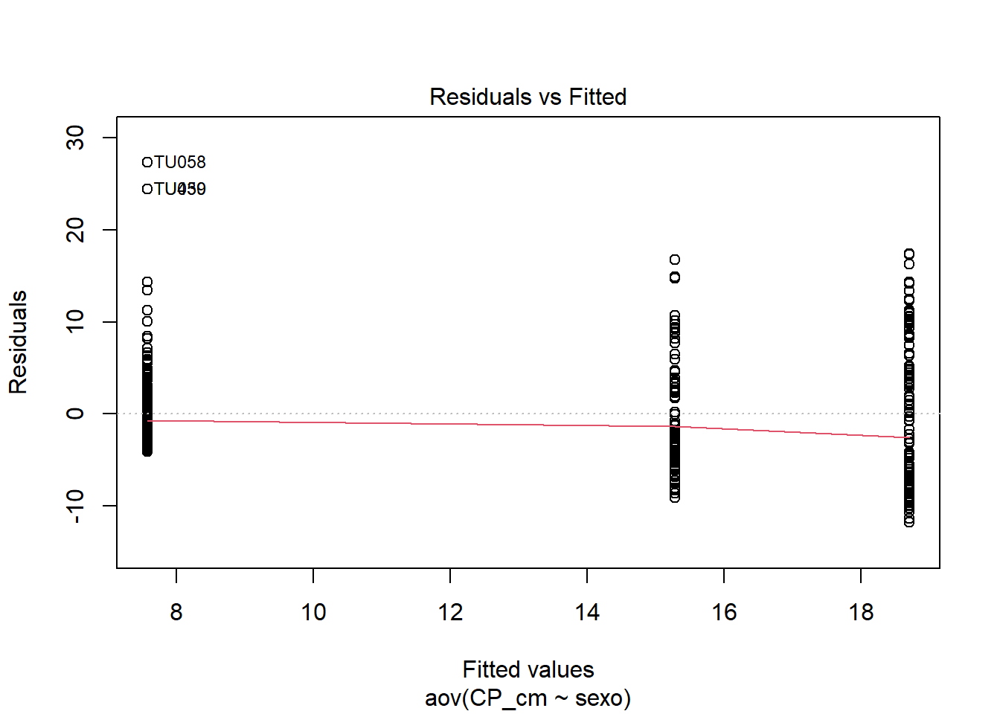
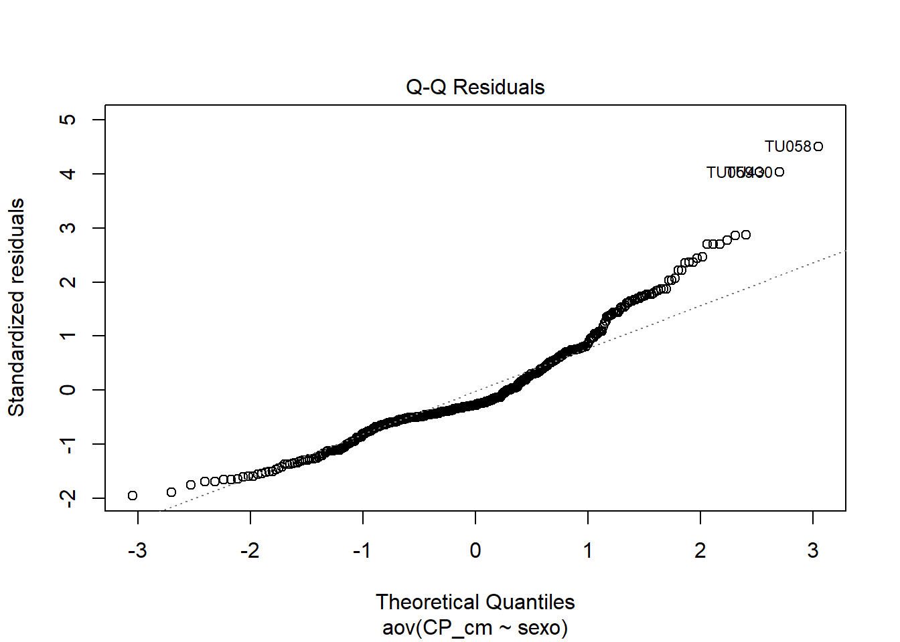
13.13 ANOVA Two-Way, teste entre grupos e dois fatores (Factorial ANOVA)
A ANOVA fatorial funciona da mesma maneira que a ANOVA de uma via, exceto pelo fato de que uma variável independente adicional é examinada. Cada variável independente pode possuir dois ou mais níveis. Em um delineamento entre grupos com dois fatores, cada participante foi aleatoriamente designado para apenas um dos diferentes níveis de cada variável independente, onde cada uma das diferentes células representa combinações únicas dos níveis dos dois fatores.
13.13.0.1 Pressupostos
Antes de realizar a ANOVA de duas vias, é necessário garantir que os pressupostos necessários sejam atendidos. Os pressupostos da ANOVA de duas vias são os mesmos da ANOVA de uma via:
Normalidade populacional: As populações das quais as amostras foram retiradas devem apresentar distribuição normal. Isso deve ser verificado para cada grupo usando estatísticas de normalidade, como assimetria (skewness) e teste de Shapiro-Wilk.
Homogeneidade de variâncias: Os escores em cada grupo devem apresentar variâncias homogêneas.
A principal preocupação está relacionada às violações do segundo pressuposto, porque tais violações podem significar que os dados foram avaliados em um nível de significância maior do que o inicialmente assumido. Em vez de serem significativos em um nível alfa de 0,05, os resultados podem, na realidade, ser significativos apenas em um nível alfa de 0,10.
Isso ocorre porque violações do pressuposto de homogeneidade distorcem o formato da distribuição F, de modo que o valor crítico de F deixa de corresponder a um ponto de corte de 5%.
13.13.0.2 Exemplo
No caso dos dados de dinâmica populacional do tucunaré, além do fator sexo (que tem três níveis: MACHO, FÊMEA, imaturo), podemos querer considerar o efeito de um segundo fator no comprimento dos indivíduos. Podemos usar o fator periodo (dois níveis: chuvoso, seco).
Assim, a primeira variável independente é o sexo, com três níveis, e a segunda variável independente é o período do ano, com dois níveis. A variável dependente pode ser o comprimento padrão (CP_cm) ou comprimento total (CT_cm).
Atente que agora temos um delineamento fatorial 3 × 2, com seis combinações possíveis.
univ$sexo <- factor(univ$sexo,
labels = c("MACHO", "FEMEA", "imaturo"))
univ$periodo <- factor(univ$periodo,
labels = c("chuvoso", "seco"))
str(univ)
table(univ$sexo, univ$periodo)## 'data.frame': 434 obs. of 22 variables:
## $ CT_cm : num 32.4 33.4 27.3 13.2 14.3 22.7 23.2 13.5 24.6 19.4 ...
## $ PT_g : num 468.8 520 301.5 28.2 38.9 ...
## $ CP_cm : num 27.2 28.8 23.8 11 11.9 20.5 19.2 11.5 20.5 16 ...
## $ Ctubo_cm: num 39.8 14.3 13 16.5 15.5 24.2 25 17.5 25.7 18.3 ...
## $ PC_g : num 458.9 507.4 283.4 27.7 37.7 ...
## $ p_PT : num 2.11 2.42 6 1.77 3.08 ...
## $ Pest_g : num 3.9 5.9 15.5 0.3 0.8 9.9 6.8 4.1 2.5 0.7 ...
## $ Cest_cm : num 7.7 10 10.2 4.3 4.5 6.4 7.5 6.8 7.6 5.1 ...
## $ gr_est : chr "I" "I" "III" "I" ...
## $ ir_est : num 0.832 1.135 5.141 1.064 2.057 ...
## $ Pint_g : num 4.8 5.3 2.4 0.1 0.3 2.7 3.3 0.4 2 1.4 ...
## $ Cint_cm : num 38.3 13.3 12 16 15 23.7 24.5 17 25.3 17.7 ...
## $ gr_int : chr "II" "II" "II" "II" ...
## $ ir_int : num 1.024 1.019 0.796 0.355 0.771 ...
## $ Pgon_g : num 1.2 1.4 0.2 0.1 0.1 0.4 13.8 0.1 0.1 0.1 ...
## $ Cgon_cm : chr "7" "6.5" "7.7" "5" ...
## $ emg : chr "IMATURO" "MADURO" "EM MATURACAO" "IMATURO" ...
## $ ig : num 0.256 0.2692 0.0663 0.3546 0.2571 ...
## $ mes : chr "ago" "ago" "ago" "ago" ...
## $ periodo : Factor w/ 2 levels "chuvoso","seco": 1 1 1 1 1 1 1 1 1 1 ...
## $ estação : chr "inverno" "inverno" "inverno" "inverno" ...
## $ sexo : Ord.factor w/ 3 levels "MACHO"<"FEMEA"<..: 1 1 1 1 1 1 2 3 1 1 ...
##
## chuvoso seco
## MACHO 68 54
## FEMEA 38 53
## imaturo 60 161Cada célula da tabela criada, representa uma combinação entre sexo (MACHO, FÊMEA, imaturo) e período (chuvoso, seco).
A partir desse desenho, podemos responder às seguintes perguntas:
O sexo influencia o comprimento dos indivíduos?
O período do ano influencia o comprimento dos indivíduos?
A influência do sexo sobre o comprimento depende do período do ano?
Ou seja, deseja-se avaliar a possível interação entre sexo e período sobre a estrutura de tamanho populacional de Cichla ocellaris.
library("ggpubr")
ggboxplot(univ, x = "sexo", y = "CP_cm", color = "periodo",
palette = c("#00AFBB", "#E7B800"))
ggline(univ, x = "sexo", y = "CP_cm", color = "periodo",
add = c("mean_se", "dotplot"),
binwidth = 1,
palette = c("#00AFBB", "#E7B800"))## Bin width defaults to 1/30 of the range of the data. Pick better value with
## `binwidth`.
boxplot(CP_cm ~ periodo * sexo, data=univ, frame = FALSE,
col = c("#00AFBB", "#E7B800"), ylab="CP_cm")
# Gráfico das interações
interaction.plot(x.factor = univ$periodo, trace.factor = univ$sexo,
response = univ$CP_cm, fun = mean,
type = "b", legend = TRUE,
xlab = "Sexo", ylab="CP_cm",
pch=c(1,19), col = c("#00AFBB", "#E7B800"))

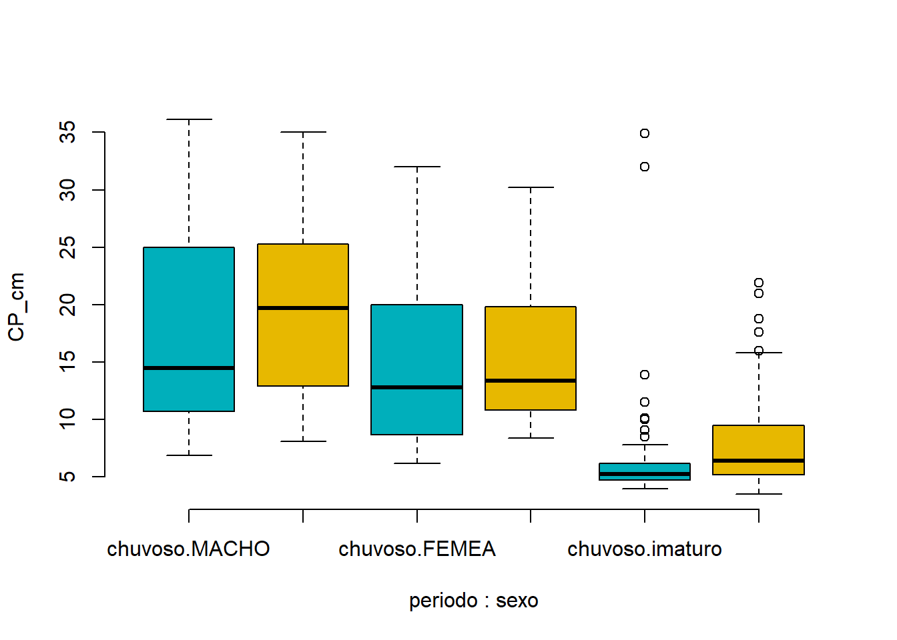
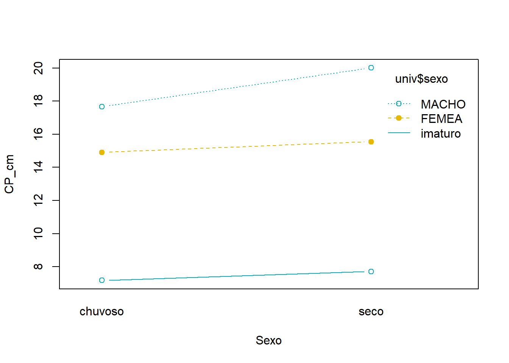
13.13.1 Gráficos exploratórios
anova2 <- aov(CP_cm ~ periodo + sexo, data = univ)
summary(anova2)
#O modelo ajustado acima não representa um modelo aditivo.
#Pressupõe-se que as duas variáveis fatoriais sejam independentes entre si.
#Substitua o símbolo de soma (+) por um asterisco (*) caso você considera
#que essas duas variáveis possam interagir, produzindo um efeito sinérgico.
anova3 <- aov(CP_cm ~ periodo * sexo, data = univ)
summary(anova3)
require("dplyr")
summarise(
group_by(univ, periodo, sexo),
count = n(),
mean = mean(CP_cm, na.rm = TRUE),
sd = sd(CP_cm, na.rm = TRUE)
)## `summarise()` has regrouped the output.
## ℹ Summaries were computed grouped by periodo and sexo.
## ℹ Output is grouped by periodo.
## ℹ Use `summarise(.groups = "drop_last")` to silence this message.
## ℹ Use `summarise(.by = c(periodo, sexo))` for per-operation grouping (`?dplyr::dplyr_by`) instead.
# Comparações múltiplas pares: Tukey
TukeyHSD(anova3, which = "sexo")
TukeyHSD(anova3, which = "periodo")
TukeyHSD(anova3)
# Comparações múltiplas pares
library(multcomp)
summary(glht(anova2, linfct = mcp(sexo = "Tukey")))
# T-test entre pares
pairwise.t.test(univ$CP_cm, univ$sexo,
p.adjust.method = "BH")## Df Sum Sq Mean Sq F value Pr(>F)
## periodo 1 231 231 6.29 0.0125 *
## sexo 2 10634 5317 144.80 <2e-16 ***
## Residuals 430 15789 37
## ---
## Signif. codes: 0 '***' 0.001 '**' 0.01 '*' 0.05 '.' 0.1 ' ' 1
## Df Sum Sq Mean Sq F value Pr(>F)
## periodo 1 231 231 6.287 0.0125 *
## sexo 2 10634 5317 144.714 <2e-16 ***
## periodo:sexo 2 64 32 0.874 0.4180
## Residuals 428 15725 37
## ---
## Signif. codes: 0 '***' 0.001 '**' 0.01 '*' 0.05 '.' 0.1 ' ' 1
## # A tibble: 6 × 5
## # Groups: periodo [2]
## periodo sexo count mean sd
## <fct> <ord> <int> <dbl> <dbl>
## 1 chuvoso MACHO 68 17.7 8.41
## 2 chuvoso FEMEA 38 14.9 6.78
## 3 chuvoso imaturo 60 7.18 6.25
## 4 seco MACHO 54 20.0 7.70
## 5 seco FEMEA 53 15.5 5.90
## 6 seco imaturo 161 7.72 3.56
## Tukey multiple comparisons of means
## 95% family-wise confidence level
##
## Fit: aov(formula = CP_cm ~ periodo * sexo, data = univ)
##
## $sexo
## diff lwr upr p adj
## FEMEA-MACHO -3.214875 -5.189460 -1.240291 0.0004334
## imaturo-MACHO -10.698753 -12.306648 -9.090859 0.0000000
## imaturo-FEMEA -7.483878 -9.259486 -5.708270 0.0000000
##
## Tukey multiple comparisons of means
## 95% family-wise confidence level
##
## Fit: aov(formula = CP_cm ~ periodo * sexo, data = univ)
##
## $periodo
## diff lwr upr p adj
## seco-chuvoso -1.501065 -2.677777 -0.3243541 0.0125349
##
## Tukey multiple comparisons of means
## 95% family-wise confidence level
##
## Fit: aov(formula = CP_cm ~ periodo * sexo, data = univ)
##
## $periodo
## diff lwr upr p adj
## seco-chuvoso -1.501065 -2.677777 -0.3243541 0.0125349
##
## $sexo
## diff lwr upr p adj
## FEMEA-MACHO -3.214875 -5.189460 -1.240291 0.0004334
## imaturo-MACHO -10.698753 -12.306648 -9.090859 0.0000000
## imaturo-FEMEA -7.483878 -9.259486 -5.708270 0.0000000
##
## $`periodo:sexo`
## diff lwr upr p adj
## seco:MACHO-chuvoso:MACHO 2.3360566 -0.8267292 5.4988425 0.2817433
## chuvoso:FEMEA-chuvoso:MACHO -2.7650155 -6.2793887 0.7493578 0.2163302
## seco:FEMEA-chuvoso:MACHO -2.1223640 -5.3017372 1.0570091 0.3967891
## chuvoso:imaturo-chuvoso:MACHO -10.4876471 -13.5610260 -7.4142681 0.0000000
## seco:imaturo-chuvoso:MACHO -9.9471502 -12.4566753 -7.4376250 0.0000000
## chuvoso:FEMEA-seco:MACHO -5.1010721 -8.7751338 -1.4270104 0.0011585
## seco:FEMEA-seco:MACHO -4.4584207 -7.8134652 -1.1033762 0.0022418
## chuvoso:imaturo-seco:MACHO -12.8237037 -16.0784799 -9.5689275 0.0000000
## seco:imaturo-seco:MACHO -12.2832068 -15.0118743 -9.5545393 0.0000000
## seco:FEMEA-chuvoso:FEMEA 0.6426514 -3.0456990 4.3310018 0.9962034
## chuvoso:imaturo-chuvoso:FEMEA -7.7226316 -11.3200158 -4.1252474 0.0000000
## seco:imaturo-chuvoso:FEMEA -7.1821347 -10.3115486 -4.0527208 0.0000000
## chuvoso:imaturo-seco:FEMEA -8.3652830 -11.6361800 -5.0943860 0.0000000
## seco:imaturo-seco:FEMEA -7.8247861 -10.5726627 -5.0769095 0.0000000
## seco:imaturo-chuvoso:imaturo 0.5404969 -2.0840164 3.1650102 0.9917050
##
##
## Simultaneous Tests for General Linear Hypotheses
##
## Multiple Comparisons of Means: Tukey Contrasts
##
##
## Fit: aov(formula = CP_cm ~ periodo + sexo, data = univ)
##
## Linear Hypotheses:
## Estimate Std. Error t value Pr(>|t|)
## FEMEA - MACHO == 0 -3.5823 0.8438 -4.246 7.4e-05 ***
## imaturo - MACHO == 0 -11.4502 0.7060 -16.219 < 1e-05 ***
## imaturo - FEMEA == 0 -7.8679 0.7601 -10.351 < 1e-05 ***
## ---
## Signif. codes: 0 '***' 0.001 '**' 0.01 '*' 0.05 '.' 0.1 ' ' 1
## (Adjusted p values reported -- single-step method)
##
##
## Pairwise comparisons using t tests with pooled SD
##
## data: univ$CP_cm and univ$sexo
##
## MACHO FEMEA
## FEMEA 5.6e-05 -
## imaturo < 2e-16 < 2e-16
##
## P value adjustment method: BHO QUE REPORTAR (anova2):
A ANOVA de duas vias revelou efeito significativo do período do ano sobre o comprimento padrão dos indivíduos (F₁,₄₃₀ = 6,29; p = 0,013), bem como efeito significativo do sexo (F₂,₄₃₀ = 144,80; p < 0,001).
No caso da anova2, o modelo NÃO testou interação (periodo + sexo). Portanto, você NÃO pode afirmar se o efeito do sexo depende do período. Para testar a interação usamos periodo * sexo, na anova2.
13.13.2 Avaliações a posteriori
# Homogeneidade de variâncias
plot(anova3, 1)
library(car)
leveneTest(CP_cm ~ periodo*periodo, data = univ)
# Normalidade pelos resíduos (Q-Q plot)
plot(anova3, 2)
# Extraindo os resíduos e rodando o Shapiro-Wilk neles
anova3_residuals <- residuals(object = anova3)
shapiro.test(x = anova3_residuals )
# ANOVA para desenhos não balanceados
library(car)
nb_anova <- aov(CP_cm ~ periodo * sexo, data = univ)
Anova(nb_anova, type = "III")## Levene's Test for Homogeneity of Variance (center = median)
## Df F value Pr(>F)
## group 1 5.4279 0.02028 *
## 432
## ---
## Signif. codes: 0 '***' 0.001 '**' 0.01 '*' 0.05 '.' 0.1 ' ' 1
##
## Shapiro-Wilk normality test
##
## data: anova3_residuals
## W = 0.92359, p-value = 4.653e-14
##
## Anova Table (Type III tests)
##
## Response: CP_cm
## Sum Sq Df F value Pr(>F)
## (Intercept) 27390.0 1 745.5129 <2e-16 ***
## periodo 122.3 1 3.3281 0.0688 .
## sexo 3641.5 2 49.5584 <2e-16 ***
## periodo:sexo 64.2 2 0.8741 0.4180
## Residuals 15724.6 428
## ---
## Signif. codes: 0 '***' 0.001 '**' 0.01 '*' 0.05 '.' 0.1 ' ' 1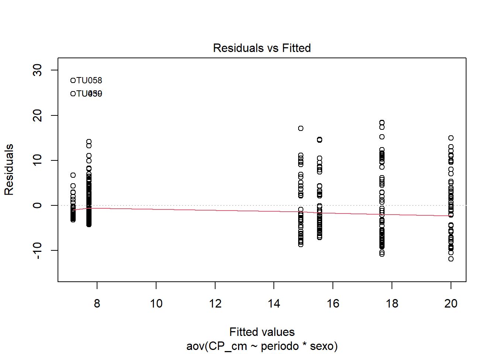

13.14 Técnicas não-paramétricas
Os testes não-paramétricos devem ser usandos quando os dados NÃO apresentam normalidade, há presença de outliers fortes, a distribuição é assimétrica e as variâncias são muito heterogêneas, ou seja, quando ocorrem violações importantes dos pressupostos de distribuição exigidos pelos testes paramétricos. Em geral, esses testes tendem a ser menos poderosos do que seus equivalentes paramétricos.
Além disso, alguns testes não-paramétricos, como o qui-quadrado que veremos a seguir, são apropriados para dados medidos em escalas que não são intervalares nem de razão.
A seguir apresento de forma resumida a implementação dos principais testes não-paramétricos no R.
Teste qui-quadrado de aderência (goodness of fit)
Teste qui-quadrado de independência ou associação
Teste de Mann–Whitney (soma dos postos de Wilcoxon)
Teste de postos sinalizados de Wilcoxon (Wilcoxon signed-rank)
Teste de Kruskal–Wallis
Teste de Friedman
Correlação por postos de Spearman.
A verificação dos pressupostos para técnicas não paramétricas não é tão rigorosa quanto para os métodos paramétricos. Entretanto, alguns pressupostos gerais ainda devem ser considerados:
Amostragem aleatória: As observações devem ser obtidas por meio de amostragem aleatória da população de interesse. Forma e variabilidade semelhantes entre distribuições: Os grupos comparados devem apresentar distribuições com formatos e dispersões relativamente semelhantes. Independência das observações: Em delineamentos entre grupos (between-subjects), cada indivíduo deve pertencer a apenas um grupo, e os grupos não devem apresentar qualquer tipo de dependência entre si.
13.14.1 Testes qui-quadrado
Existem dois principais tipos de testes qui-quadrado:
O teste qui-quadrado de aderência (goodness of fit), utilizado para analisar uma única variável categórica e verificar se as frequências observadas diferem das frequências esperadas, e o qui-quadrado de independência ou associação, utilizado para avaliar a relação entre duas variáveis categóricas (COAKES; STEED, 2001; MCDONALD, 2014).
13.14.1.1 Pressupostos
Antes de realizar um teste qui-quadrado, três pressupostos devem ser avaliados:
Amostragem aleatória: As observações devem ser selecionadas aleatoriamente da população de todas as observações possíveis.
Independência das observações: Cada observação deve corresponder a um indivíduo diferente, sem que um mesmo indivíduo seja contabilizado mais de uma vez.
Tamanho das frequências esperadas: Quando o número de células da tabela é pequeno (especialmente inferior a dez) e o tamanho amostral total também é reduzido, a menor frequência esperada recomendada para aplicação do teste qui-quadrado é cinco. As frequências observadas, por outro lado, podem assumir qualquer valor, inclusive zero.
13.14.2 Teste qui-quadrado de aderência
O teste qui-quadrado de aderência é usado quando existe apenas uma variável categórica e queremos verificar se as frequências observadas seguem uma distribuição esperada. Nos dados de tucunaré, algumas perguntas que poderiam ser respondidas com esse teste são:
Razão sexual: A proporção de machos e fêmeas na população de tucunarés é de 1:1?
Hipótese nula: A proporção de machos e fêmeas é igual (50% para cada sexo).
Estágios de maturação: Os estágios de maturação ocorrem na mesma proporção?
Hipótese nula: Os indivíduos estão distribuídos igualmente entre os estágios de maturação.
Neste caso, o teste verifica se as frequências observadas diferem das frequências esperadas sob uma distribuição uniforme.
13.14.3 Teste qui-quadrado de independência ou associação
Se o teste qui-quadrado aderência compara frequências observadas com frequências esperadas de uma variável categórica, no qui-quadrado de independência, duas variáveis categóricas, são comparadas, e o teste averigua a associação entre elas.
Pergunta: A proporção de machos e fêmeas varia entre os períodos seco e chuvoso?
Nesse caso seriam analisadas simultaneamente as variáveis sexo e periodo.
13.14.4 Demais testes não-paramétricos
13.14.4.1 Teste t não-paramétrico:
- Wilcoxon para uma amostra
- Wilcoxon pareado
- Mann-Whitney (Wilcoxon rank-sum)
# Wilcoxon para uma amostra
wilcox_machos <- wilcox.test(
machos,
mu = 26.2,
alternative = "two.sided",
conf.int = TRUE,
conf.level = 0.95
)
wilcox_machos
wilcox_femeas <- wilcox.test(
femeas,
mu = 21.4,
alternative = "two.sided",
conf.int = TRUE,
conf.level = 0.95
)
wilcox_femeas
# Wilcoxon para grupos independentes
wilcox_sexo <- wilcox.test(
machos,
femeas,
paired = FALSE,
alternative = "two.sided",
conf.int = TRUE,
conf.level = 0.95
)
wilcox_sexo
# Wilcoxonpara medidas repetidas
# Filtrar apenas fêmeas
femeas <- subset(univ, sexo == "FEMEA")
# Manter apenas IMATURO e MADURO
femeas2 <- subset(
femeas,
emg %in% c("IMATURO", "MADURO")
)
femeas2
# Teste de Mann-Whitney/Wilcoxon
wilcox.test(
CP_cm ~ emg,
data = femeas2,
alternative = "two.sided",
conf.int = TRUE
)O comprimento total diferiu significativamente entre os estágios de maturação avaliados nas fêmeas (teste de Mann-Whitney/Wilcoxon: W = 24; p < 0,001). A diferença estimada entre os grupos foi de -16,60 cm (IC95% = -21,60 a -11,30).
13.14.4.2 ANOVA não-paramétrica:
- Kruskal-Wallis
- Scheirer-Ray-Hare test
univ$sexo <- factor(univ$sexo)
univ$periodo <- factor(univ$periodo)
anova1 <- kruskal.test(
CP_cm ~ sexo,
data = univ
)
anova1
#Pós-hoc para Kruskal-Wallis
#install.packages("FSA")
library(FSA)
dunnTest(
CP_cm ~ sexo,
data = univ,
method = "bonferroni"
)
#install.packages("rcompanion")
library(rcompanion)
anova2 <- scheirerRayHare(
CP_cm ~ periodo + sexo,
data = univ
)
anova2
anova3 <- scheirerRayHare(
CP_cm ~ periodo * sexo,
data = univ
)
anova3
#Se sexo for significativo:
dunnTest(
CP_cm ~ sexo,
data = univ,
method = "bonferroni"
)13.16 TESTE SEUS CONHECIMENTOS
NOTA
Baixe esse arquivo de atividade (LISTA) e responda às questões. Se achar necessário, insira “chunks” de scripts do R, prints de tela ou cópias de gráficos, resultados ou mensagens de erro.
Script limpo
Aqui apresento o scrip na íntegra sem os textos ou outros comentários. Você pode copiar e colar no R para executa-lo. Lembre de remover os # ou ## caso necessite executar essas linhas.
# dev.off() #apaga os graficos, se houver algum
# rm(list=ls(all=TRUE)) #limpa a memória
# cat("\014") #limpa o console
# install.packages("openxlsx") #importa arquivos do excel
# install.packages("fdth")
# install.packages("ggpubr")
# install.packages("multcomp")
library(openxlsx)
# getwd()
# setwd("C:/Seu/Diretório/De/Trabalho")
library(openxlsx)
univ <- read.xlsx("D:/Elvio/OneDrive/Disciplinas/_EcoNumerica/5.Matrizes/tucuna.xlsx",
rowNames = T, colNames = T,
sheet = "tucuna")
head(univ, 10)
head(univ[, 1:5], 10)
# #View(univ)
# print(univ[1:5,1:5])
# univ
# str(univ)
# mode(univ)
# class(univ)
colnames(univ)
var <- univ$CP_cm
var_v <- as.vector(var)
range(var_v)
# #View(var)
# print(var_v)
# var_v
# sort(var_v)
# str(var_v)
# mode(var_v)
# class(var_v)
# range(var_v)
# length(var_v)
n <- length(var_v)
set.seed(666)
var_sub <- sample(var_v, size = n, replace = F) #atualize o valor de 'size=' se necessário
#OU
#var_sub <- univ[univ$CP_cm >0 & univ$CP_cm <20,] #data.frame
#var_sub <- var_v[var_v>=5 & var_v <=15] #vector
# var_sub <- var_trns
library(fdth)
range <- range(var_sub) #retorna o valor máximo e mínimo
#?range
#Regra de Sturges
k <- 1 + 3.3*log10(length(var_sub))
k <- ceiling(k) #ver as funções floor() e round()
h <- (max(var_sub) - min(var_sub))/k
h <- floor(h)
tf <- fdt(var_sub, start=3, end=40, h=4) #tabela de frequência manual
tfk <- fdt(var_sub, k=k) #atente para o uso de k
#?fdt
print(tf)
print(tfk)
stem(var_sub)
sort(var_sub)
library(moments)
skewness(var_sub)
kurtosis(var_sub)
par(mfrow = c(2,1)) #gráficos lado a lado
plot(tf) #distribuição de frequências
boxplot(var_sub, horizontal = TRUE,
xlab="Class limits") #boxplot
par(mfrow = c(1,1)) #gráficos de volta ao normal
# Quartis
Q1 <- quantile(var_sub, 0.25)
Q3 <- quantile(var_sub, 0.75)
# Intervalo interquartil
IQR <- IQR(var_sub)
# Limites para outliers
lim_inf <- Q1 - 1.5 * IQR
lim_sup <- Q3 + 1.5 * IQR
# Valores considerados outliers
outliers <- var_sub[
var_sub < lim_inf |
var_sub > lim_sup
]
# Resultados
Q1
Q3
IQR
lim_inf
lim_sup
outliers
sort(outliers)
hist(var_sub, probability = TRUE) #adicionamos a função densidade
curve(dnorm(x, mean = mean(var_sub),
sd = sd(var_sub)), #cria valores de x dentro do intervalo do gráfico
col = "red",
add = TRUE) #adiciona ao gráfico atual
summary(var_sub)
#?summary
sd(var_sub) #desvio padrão
var(var_sub) #variância
names(sort(table(var_sub), decreasing = TRUE))[1] #moda
limites <- range(var_sub)
par(mfrow=c(3,1))
qqnorm(var_sub,
main = "Normal Q-Q Plot")
qqline(var_sub,
col = "red",
lwd = 1)
boxplot(var_sub, horizontal = TRUE, #atentar para o parâmetro `horizontal`
main="Boxplot",
ylim=limites,
xlab="Class limits") #boxplot
hist(var_sub, probability = TRUE,
xlim = limites,
main = "Histogram") #adicionamos a função densidade
curve(dnorm(x, mean = mean(var_sub),
sd = sd(var_sub)), #cria valores de x dentro do intervalo do gráfico
col = "red",
add = TRUE) #adiciona ao gráfico atual
par(mfrow=c(1,1))
library(ggpubr)
ggqqplot(var_sub)
shap <- shapiro.test(var_sub)
shap
p <- format(shap$p.value, scientific = FALSE)
p
#?str()
#?attributes()
ks.test(var_sub, "pnorm")
ks.test(var_sub,
"pnorm",
mean(var_sub),
sd(var_sub))
#install.packages("nortest")
library(nortest)
lillie.test(var_sub)
# library(MASS)
# boxcox(lm(var_sub ~ 1))
# var_trns <- var_sub
# Levene
library(car)
univ$sexo <- as.factor(univ$sexo) #evita o Warning de "group coerced to factor"
fator <- factor(univ$sexo, levels = c("MACHO", "FEMEA", "imaturo"))
lev <- leveneTest(var_sub ~ fator, data = univ)
fator
lev
# Teste de Levene entre dois de tres (ou mais) grupos
machos_CP_cm <- na.omit(univ$CP_cm[univ$sexo == "MACHO"])
femeas_CP_cm <- na.omit(univ$CP_cm[univ$sexo == "FEMEA"])
imat_CP_cm <- na.omit(univ$CP_cm[univ$sexo == "imaturo"])
leveneTest(CP_cm ~ sexo, data = univ[univ$sexo %in% c("MACHO", "FEMEA"), ])
#Interpretação: Um valor de p maior que o nível de significância de 0.05 significa que, a hipótese nula é mantida e NÃO HÁ diferença significativa entre as variâncias.
univ$sexo <- factor(univ$sexo, levels = c("MACHO", "FEMEA", "imaturo"))
boxplot(CP_cm ~ fator, data = univ)
var_sub <- var_v
# Machos
machos <- subset(var_sub, univ$sexo == "MACHO")
machos
mean(machos)
t_machos <- t.test(
machos,
mu = 26.2
)
t_machos
# Fêmeas
femeas <- subset(var_sub, univ$sexo == "FEMEA")
femeas
mean(femeas)
t_femeas <- t.test(
femeas,
mu = 21.4
)
t_femeas
t.test(machos_CP_cm, femeas_CP_cm,
alternative = c("two.sided"), #"two.sided", "less", "greater"
mu = 0, paired = FALSE,
var.equal = FALSE, #não assume homeg. de variâncias = Welch’s t-test
conf.level = 0.95)
# Filtrar apenas fêmeas
femeas <- subset(univ, sexo == "FEMEA")
# Manter apenas IMATURO e MADURO
femeas2 <- subset(
femeas,
emg %in% c("IMATURO", "EM MATURACAO")
)
t.test(
CP_cm ~ emg,
data = femeas2,
alternative = "two.sided",
var.equal = FALSE, #Welch t-test
conf.level = 0.95
)
levels(univ$sexo)
univ$sexo <- ordered(univ$sexo,
levels = c("MACHO", "FEMEA", "imaturo"))
library(dplyr)
summarise(
group_by(univ, sexo),
count = n(),
mean = mean(CP_cm, na.rm = TRUE),
sd = sd(CP_cm, na.rm = TRUE)
)
# Conjunto de gráficos
library("ggpubr")
ggboxplot(univ, x = "sexo", y = "CP_cm",
color = "sexo", palette = c("#00AFBB", "#E7B800", "#FC4E07"),
order = c("MACHO", "FEMEA", "imaturo"),
ylab = "CP_cm", xlab = "Sexo")
ggline(univ, x = "sexo", y = "CP_cm",
add = c("mean_se", "jitter"),
order = c("MACHO", "FEMEA", "imaturo"),
ylab = "Weight", xlab = "Treatment")
boxplot(CP_cm ~ sexo, data = univ,
xlab = "Sexo", ylab = "CP_cm",
frame = FALSE, col = c("#00AFBB", "#E7B800", "#FC4E07"))
library(gplots)
plotmeans(CP_cm ~ sexo, data = univ,
xlab = "Sexo", ylab = "CP_cm",
main="Média com 95% IC") #frame = FALSE
anova <- aov(CP_cm ~ sexo, data = univ)
summary(anova)
#Interpretação: Um valor de p MENOR que o nível de significância de 0.05 significa que,
#EXISTE diferença significativa entre as três grupos de médias.
TukeyHSD(anova)
library(multcomp)
summary(glht(anova, linfct = mcp(sexo = "Tukey")))
# T-test entre pares
pairwise.t.test(univ$CP_cm, univ$sexo,
p.adjust.method = "BH")
#pairwise.t.test
## Homogeneidade de variâncias
plot(anova, 1) #valores numerados são outliers
library(car)
leveneTest(CP_cm ~ sexo, data = univ)
# ANOVA sem o pressuposto de equalidade de variâncias
oneway.test(CP_cm ~ sexo, data = univ)
# Testes pareados sem o pressuposto de equalidade de variâncias
pairwise.t.test(univ$CP_cm, univ$sexo,
p.adjust.method = "BH", pool.sd = FALSE)
# Normalidade pelos resíduos (Q-Q plot)
plot(anova, 2)
# Extraindo os resíduos e rodando o Shapiro-Wilk neles
anova_residuals <- residuals(object = anova)
shapiro.test(x = anova_residuals)
# ANOVA não-paramétrica (Kruskal-Wallis)
kruskal.test(CP_cm ~ sexo, data = univ)
univ$sexo <- factor(univ$sexo,
labels = c("MACHO", "FEMEA", "imaturo"))
univ$periodo <- factor(univ$periodo,
labels = c("chuvoso", "seco"))
str(univ)
table(univ$sexo, univ$periodo)
library("ggpubr")
ggboxplot(univ, x = "sexo", y = "CP_cm", color = "periodo",
palette = c("#00AFBB", "#E7B800"))
ggline(univ, x = "sexo", y = "CP_cm", color = "periodo",
add = c("mean_se", "dotplot"),
binwidth = 1,
palette = c("#00AFBB", "#E7B800"))
boxplot(CP_cm ~ periodo * sexo, data=univ, frame = FALSE,
col = c("#00AFBB", "#E7B800"), ylab="CP_cm")
# Gráfico das interações
interaction.plot(x.factor = univ$periodo, trace.factor = univ$sexo,
response = univ$CP_cm, fun = mean,
type = "b", legend = TRUE,
xlab = "Sexo", ylab="CP_cm",
pch=c(1,19), col = c("#00AFBB", "#E7B800"))
anova2 <- aov(CP_cm ~ periodo + sexo, data = univ)
summary(anova2)
#O modelo ajustado acima não representa um modelo aditivo.
#Pressupõe-se que as duas variáveis fatoriais sejam independentes entre si.
#Substitua o símbolo de soma (+) por um asterisco (*) caso você considera
#que essas duas variáveis possam interagir, produzindo um efeito sinérgico.
anova3 <- aov(CP_cm ~ periodo * sexo, data = univ)
summary(anova3)
require("dplyr")
summarise(
group_by(univ, periodo, sexo),
count = n(),
mean = mean(CP_cm, na.rm = TRUE),
sd = sd(CP_cm, na.rm = TRUE)
)
# Comparações múltiplas pares: Tukey
TukeyHSD(anova3, which = "sexo")
TukeyHSD(anova3, which = "periodo")
TukeyHSD(anova3)
# Comparações múltiplas pares
library(multcomp)
summary(glht(anova2, linfct = mcp(sexo = "Tukey")))
# T-test entre pares
pairwise.t.test(univ$CP_cm, univ$sexo,
p.adjust.method = "BH")
# Homogeneidade de variâncias
plot(anova3, 1)
library(car)
leveneTest(CP_cm ~ periodo*periodo, data = univ)
# Normalidade pelos resíduos (Q-Q plot)
plot(anova3, 2)
# Extraindo os resíduos e rodando o Shapiro-Wilk neles
anova3_residuals <- residuals(object = anova3)
shapiro.test(x = anova3_residuals )
# ANOVA para desenhos não balanceados
library(car)
nb_anova <- aov(CP_cm ~ periodo * sexo, data = univ)
Anova(nb_anova, type = "III")
# # Wilcoxon para uma amostra
# wilcox_machos <- wilcox.test(
# machos,
# mu = 26.2,
# alternative = "two.sided",
# conf.int = TRUE,
# conf.level = 0.95
# )
# wilcox_machos
# wilcox_femeas <- wilcox.test(
# femeas,
# mu = 21.4,
# alternative = "two.sided",
# conf.int = TRUE,
# conf.level = 0.95
# )
# wilcox_femeas
#
# # Wilcoxon para grupos independentes
# wilcox_sexo <- wilcox.test(
# machos,
# femeas,
# paired = FALSE,
# alternative = "two.sided",
# conf.int = TRUE,
# conf.level = 0.95
# )
# wilcox_sexo
#
# # Wilcoxonpara medidas repetidas
# # Filtrar apenas fêmeas
# femeas <- subset(univ, sexo == "FEMEA")
# # Manter apenas IMATURO e MADURO
# femeas2 <- subset(
# femeas,
# emg %in% c("IMATURO", "MADURO")
# )
# femeas2
# # Teste de Mann-Whitney/Wilcoxon
# wilcox.test(
# CP_cm ~ emg,
# data = femeas2,
# alternative = "two.sided",
# conf.int = TRUE
# )
# univ$sexo <- factor(univ$sexo)
# univ$periodo <- factor(univ$periodo)
#
# anova1 <- kruskal.test(
# CP_cm ~ sexo,
# data = univ
# )
# anova1
# #Pós-hoc para Kruskal-Wallis
# #install.packages("FSA")
# library(FSA)
# dunnTest(
# CP_cm ~ sexo,
# data = univ,
# method = "bonferroni"
# )
#
# #install.packages("rcompanion")
# library(rcompanion)
# anova2 <- scheirerRayHare(
# CP_cm ~ periodo + sexo,
# data = univ
# )
# anova2
#
# anova3 <- scheirerRayHare(
# CP_cm ~ periodo * sexo,
# data = univ
# )
# anova3
#
# #Se sexo for significativo:
# dunnTest(
# CP_cm ~ sexo,
# data = univ,
# method = "bonferroni"
# )